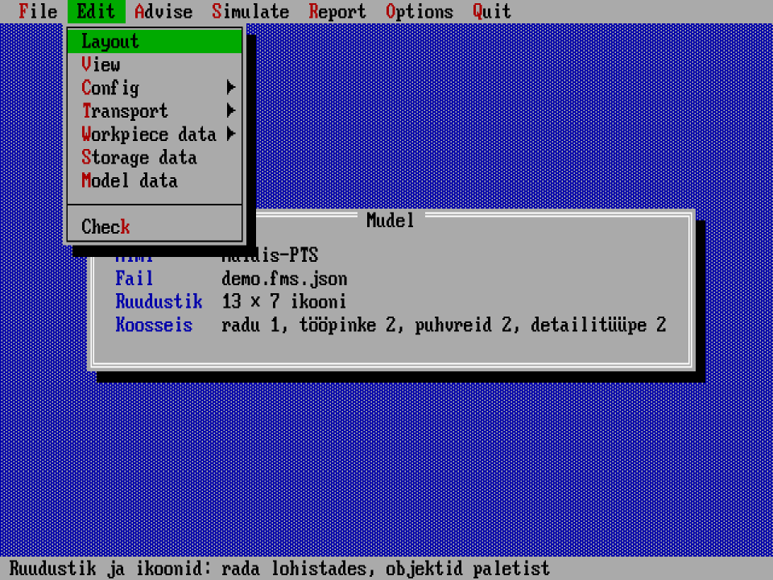
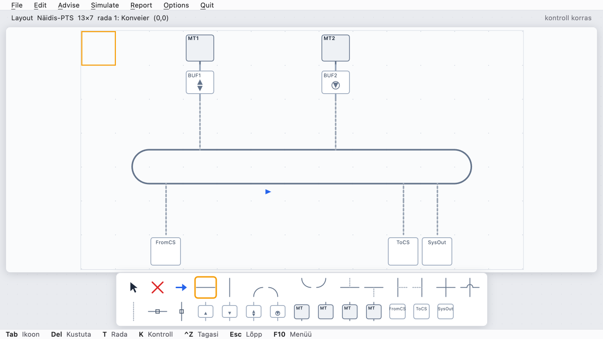
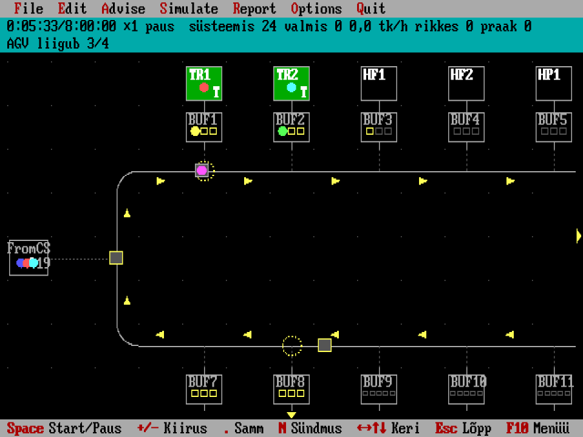
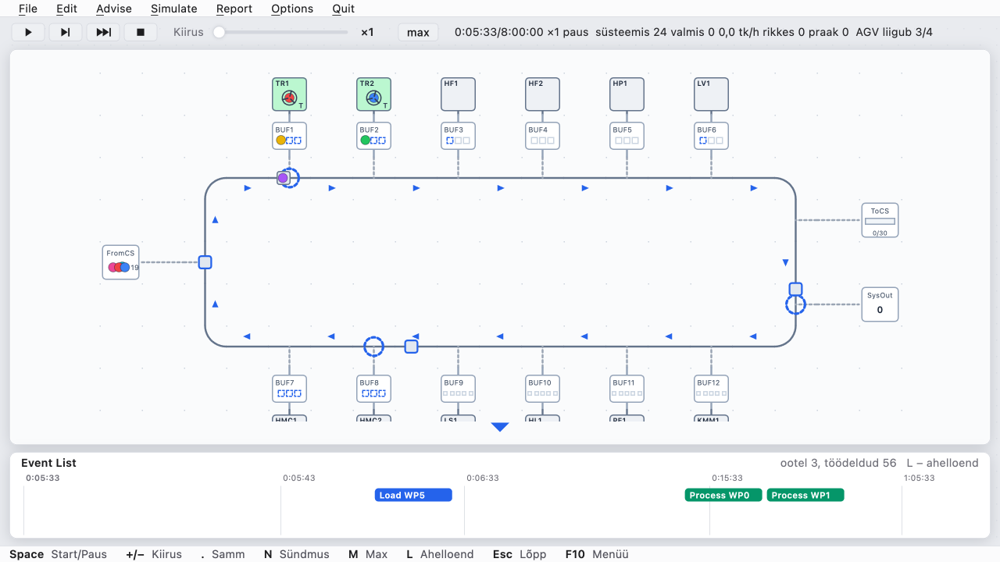
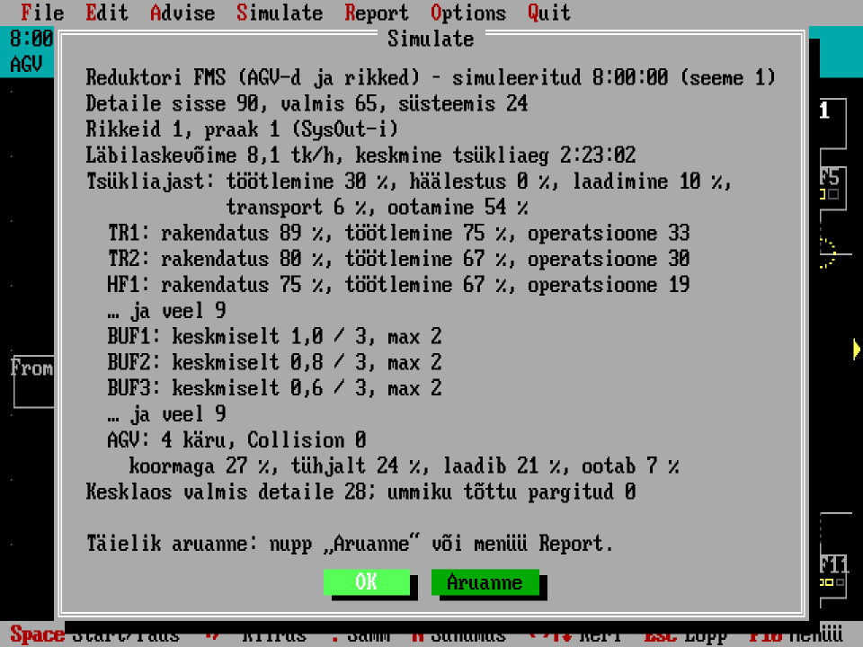
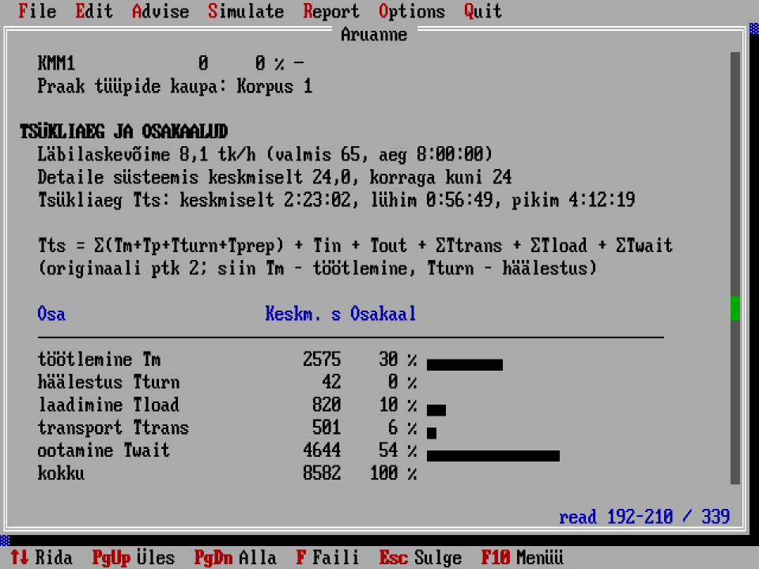

Arvutitehnika Instituut
FMSS
Paindautomatiseeritud tootmise simulatsioonisüsteem
Diplomiprojekt 1993 · uus versioon brauseris 2026 · dokumentatsioon versioonile 1.5
- Autor
- K. Kannel
- Juhendaja
- J. Riives
Annotatsioon
FMSS on paindtootmissüsteemide (PTS) diskreetsündmuste simulaator. Kasutaja joonistab tootmissüsteemi ikoonidest – transpordirajad, tööpingid, puhvrid, keskladu – ja kirjeldab detailitüübid koos tehnoloogiliste marsruutidega. Simulaator jäljendab süsteemi tööd sekund-sekundilt, animaator näitab seda ekraanil ning aruanded annavad detailide tsükliaja ja selle osakaalud, pinkide rakendatuse, läbilaskevõime ja muud näitajad.
Töö alustati 1993. aastal Tallinna Tehnikaülikoolis diplomiprojektina (Turbo Pascal, MS-DOS, EGA graafika) ja see jäi pooleli: simulaatori juhtalgoritmidest olid valmis ainult mõned. 2026. aastal valmis uus versioon brauseris; nii tarkvara kui ka dokumentatsioon on arendatud koos tehisintellekti-assistendi Claude'iga. Originaali ülesehitus – moodulid, protseduurid ja kirjed, sündmuste ajaliselt järjestatud ahelloend, Planner, menüüd ja ikoonid – on säilinud. Puuduv loogika mõeldi välja üldtuntud diskreetse simulatsiooni võtete põhjal ja kontrolliti enne teostust prototüübi, invariantide ja käsitsi arvutatud tulemustega.
Dokument kirjeldab simulatsiooni teooriat koos uute täiendustega (rajavõrgu graaf, ummikute vältimine, AGV-de liikluse juhtimine, mitu detaili alusel, rikked ja kestuste jaotused, simulatsiooni lõpurežiim), tarkvara arhitektuuri, andmeobjekte ja protseduure ning valideerimise tulemusi. Iga lahenduse juures on märgitud, kas see on pärit originaalist, on originaali täpsustus või on uus.
Võtmesõnad: paindtootmissüsteem, diskreetsündmuste simulatsioon, sündmuste nimekiri, tsükliaeg, ummikute vältimine, AGV, simulatsiooni valideerimine.
Sisukord
1 Sissejuhatus
1.1 Eesmärk ja lugu
Paindtootmissüsteemi projekteerimisel tuleb vastata küsimustele, millele on raske analüütiliselt vastata: mitu tööpinki ja kärusid on vaja, kui suured peavad olema puhvrid, kus on kitsaskoht, kui kaua detail süsteemis viibib ja kui suure osa sellest ajast ta lihtsalt ootab. Simulatsioon annab neile vastuse katsetena: sama süsteemi saab läbi mängida eri koormuse, struktuuri ja parameetritega, ilma et tehast peaks ehitama.
FMSS (Flexible Manufacturing System Simulator) alustati 1993. aastal Tallinna Tehnikaülikooli
Arvutitehnika Instituudis diplomiprojektina. Programm kirjutati Turbo Pascal 5.5-s MS-DOS-i jaoks,
graafika oli EGA (640 × 350 punkti, 16 värvi) ja aknad, menüüd ning hiir tulid J. Raidi graafikateegist
WINDOWS.PAS. Süsteem pidi olema kahetasemeline: planeerimistase (Adviser) soovitab
tootmissüsteemi struktuuri ja operatiivtase (Planner koos simulaatoriga) simuleerib konkreetset
detailide nomenklatuuri sellel struktuuril (vt 2.1).
Uus versioon töötab brauseris. See on kirjutatud JavaScriptis (ES moodulid, joonistamine Canvas-ele),
sõltuvusi ega build-sammu pole ning sait koosneb ainult staatilistest failidest. Versioon 1 on
omaaegne lahendus valmis kujul: originaali menüüd, vormid ja EGA välimus on alles, lisaks on
kaasaegne välimus (hele ja tume), mida saab vahetada klahviga F2. Simulaator ei sõltu
joonistamisest ja töötab ka ilma brauserita, mistõttu saab seda testida.
Uue versiooni tarkvara ja see dokumentatsioon on arendatud koos Claude'iga (Anthropicu tehisintellekti-assistent). Töö käis etappide kaupa. Autor seadis eesmärgid ja tegi otsused, Claude tegi ettepanekud, kirjutas koodi, testid ja tekstid ning valideeris tulemused. Iga etapi lõpus vaatas autor tulemuse üle ja kinnitas selle.
Tabel 1.1. Versioonid
| Versioon | Sisu |
|---|---|
| 1.0 | Kõik originaali osad peale Adviseri: redaktor, simulaator (pidevad ja diskreetsed rajad, rajavõrk, mitu detaili alusel, rikked), animaator, aruanded. |
| 1.1 | Suure mudeli kerimine ja suum animaatoris ning redaktoris. |
| 1.2 | Parandus: teede arvutuse ümardusviga. |
| 1.3 | Kolm suurt näidismudelit; kokkuvõte mahub EGA ekraanile. |
| 1.4 | Simulatsiooni lõpurežiim ja tellimuse (partiide) simuleerimine. |
| 1.5 | Seitsmes näidis – Mootoriosade tehas (32 pinki); kokkuvõte mahub EGA ekraanile ka paljude konnektoritega. |
1.2 Mis jäi 1993 pooleli
Säilinud diplomitöö on varane, mittelõplik versioon. Selle järgi olid tehtud graafiline liides,
failisüsteem, redaktor, animaator ja Adviser, osa simulaatorist ja osa aruandegeneraatorist.
Simulaatori algoritmidest olid valmis ainult MinuteMan, GetEvent,
PutEvent, ProgTM, FindMach ja FindPal; tegemata olid
Planner, ProcEvents, FindBuf ja FindSysPos.
Autori mälestuse järgi arenes programm hiljem edasi (suure mudeli kerimine, ProcEvent ja
lihtne Planner), aga see versioon ja täiendatud kirjeldus on kadunud.
Seega tuli uues versioonis välja mõelda kogu operatiivtaseme juhtimine: Planneri täpne loogika ja kõik sündmuste käsitlejad, tööpingi, puhvri ja väljundi valik, konveierite seiskumine laadimise ajal, kärude kokkupõrgete vältimine, rikete ja kestuste juhuslikkus ning lao ja süsteemi väljundi vaheline loogika. Diplomitöö andis selleks raamistiku: objektid ja nende parameetrid, sündmuste tüübid ja nende seosed, sündmuste nimekirja ülesehituse, peatsükli ja Planneri otsustusreeglite loetelu.
1.3 Kuidas dokumenti lugeda
Iga lahenduse juures on päritolu tunnus. Samad tunnused on lähtekoodis iga globaalse protseduuri päisekommentaaris ja disainidokumendis.
Tabel 1.2. Päritolu tunnused
| Tunnus | Tähendus |
|---|---|
| [O] | Originaal – nagu diplomitöös. |
| [T] | Täpsustus – diplomitöös puudu või ebaselge; lahendus on originaali vaimus. |
| [U] | Uus – originaalist erinev või lisatud lahendus. |
| [O nimi, U sisu] | Nimi on originaalist, sisu on uus (näiteks Enumerate, ProgTM). |
Nimed on ingliskeelsed nagu originaalis ja nimest on näha roll: suur algustäht tähistab kogu programmi
mõistet (FindMach, MachineArray), suurtähtedega on globaalne olek ja kell
(SYSTEM_TIME, IDLE), sündmuse käsitleja nimi on sündmuse nimi koos lõpuga
Proc (StopMovProc). Lühendid on originaalist: PTS – paindtootmissüsteem,
MT – tööpink, BUF – puhver, CS – keskladu, TR – transpordirada,
TM – transpordivahend (koht konveieril või käru), WP – detail.
Viited „lk N“ ja „joon. N“ on diplomitöö (1993) leheküljed ja joonised. Ajad on sekundites, kiirused cm/s ja pikkused cm.
1.4 Dokumendi ülesehitus
- Peatükk 2 – teooria: paindtootmissüsteemi mõiste, diskreetsündmuste simulatsioon, tsükliaeg ja näitajad.
- Peatükk 3 – täiendused originaalile: rajavõrgu graaf, ummikud, AGV-d, mitu detaili alusel, rikked, lõpurežiim.
- Peatükk 4 – mudel: komponendid, ikoonid, mudelifail ja andmekontroll.
- Peatükk 5 – tarkvara arhitektuur: moodulid, andmevoog, peatsükkel, sündmused, olekumasinad, Planner.
- Peatükk 6 – kasutajaliides: redaktor, animaator, aruanded.
- Peatükk 7 – loetelud: andmeobjektid (kirjed), protseduurid ja EventHandlerid.
- Peatükid 8–9 – valideerimine ja näidismudelid.
- Peatükk 10 – kokkuvõte, piirangud ja versioon 2.0.
2 Teooria
2.1 Paindtootmissüsteem
Paindtootmissüsteem (PTS, flexible manufacturing system) on arvjuhtimisega tööpinkide rühm, mida ühendab automaatne transpordisüsteem ja juhib ühine juhtsüsteem. Erinevalt jäigast tootmisliinist suudab PTS töödelda korraga mitut detailitüüpi väikeste partiidena: tööpink häälestub ümber lühikese ajaga ja detail võib sama operatsiooni saada mitmes pingis. Browne jt [3] eristavad kaheksat paindlikkuse liiki; simulaatori seisukohalt on olulisemad toote (mitu detailitüüpi), masina (ümberhäälestus), marsruudi (alternatiivsed marsruudid ja pingid) ning mahu paindlikkus (sissetoomise kiirus).
Komponendid [O]
Diplomitöö (ptk 4.3) jagab PTS-i komponendid järgmiselt; täpsemad parameetrid on peatükis 4.
Tabel 2.1. PTS-i komponendid
| Komponent | Kirjeldus | FMSS-is |
|---|---|---|
| Transpordirada (TR) | Pidev – konveier, avatud või suletud, liikumissuunaga; laadimise ajal seisab kogu konveier. Diskreetne – transpordirobotid või AGV-d, mis liiguvad iseseisvalt. | Tracks |
| Transpordivahend (TM) | Koht konveieril (alus) või käru; võib kanda mitut detaili. | Pallette |
| Tööpink (MT) | Sooritab operatsioone; laadimis- ja ümberhäälestusaeg. | MachineArray |
| Puhver (BUF) | Väike ladu pingi ja raja vahel; ühe- või kahesuunaline, pöördusmeetod FIFO, FILO või RANDOM. | BufferArray |
| Keskladu (CS) | Hoiab sisenevaid ja valmis detaile; sisend- ja väljundpositsioon. | FromCS, ToCS, Storage |
| Konnektor | Ühendab kaht rada. | Connectors |
| Süsteemi väljund | Detail lahkub süsteemist. | SysOut |
| Detail (WP) | Tüüp, prioriteet, partii suurus, alternatiivsed marsruudid; operatsiooni kestus (keskmine ja kõrvalekalle) ei sõltu pingist. | Workpieces, SysWPArray |
Struktuurivariandid [O]
Diplomitöö (ptk 2) liigitab PTS-i struktuuri nelja tunnuse järgi: transpordiprintsiip (lineaarne,
harudega, täht, võrk), tööpinkide paigutus (järjestikune, paralleelne, vaba) ja tüüp (ühe- või
mitmefunktsioonilised), transport (paindlik või jäik) ning side kesklaoga (operatiivne – detail
pääseb igast pingist otse lattu – või mitteoperatiivne). Variant tähistatakse tähekoodiga
(nt OLZN, MSGS); koos transpordiprintsiipidega annavad kombinatsioonid
48 lahendust. Nende hulgast valib Adviser kaalutabelite järgi sobivaima (lk 37).
Kahetasemeline juhtimine [O]
Süsteemi idee (lk 28–29, joon. 4.1) on kahetasemeline. Planeerimistase (Adviser) kasutab ainult staatilist infot – komponentide parameetreid – ja soovitab struktuuri. Operatiivtase (Planner ja simulaator) simuleerib antud struktuuril konkreetset detailide nomenklatuuri ja annab dünaamilise info, mille põhjal kasutaja analüüsib tulemust, muudab struktuuri või parameetreid ja kordab katset (joonis 2.1). Versioonis 1 on tehtud operatiivtase; Adviser tuleb versioonis 2.0.
Operatiivtaseme juhtimine – Planner – otsustab, millal ja mis tüüpi detail süsteemi tuua, millise marsruudi detail saab, millisesse pinki ta järgmisena läheb, millal ta välja saadetakse ning mis saab kokkupõrke ohu ja rikke korral (lk 41–44). Diplomitöö andis nende otsuste kriteeriumid loeteluna; uues versioonis on need teostatud ja täiendatud (peatükid 3 ja 5).
2.2 Diskreetsündmuste simulatsioon
Diskreetsündmuste simulatsioonis (discrete-event simulation) muutub süsteemi olek ainult
üksikutel hetkedel – sündmustel –, näiteks kui detail laaditakse pinki, operatsioon lõpeb või
käru jõuab jaama [1, 2]. Sündmuste vahel olek ei muutu, seepärast ei ole vaja iga hetke arvutada:
piisab, kui hoida tulevaste sündmuste nimekirja ja töödelda need ajalises järjekorras. Iga sündmuse
töötlemine muudab objektide olekut ja võib planeerida uusi sündmusi – nii tekivad sündmuste
ahelad, näiteks Turn → Process → Load.
Aja edenemine [O]
Kirjanduses eristatakse kaht viisi [1]. Järgmise sündmuse meetodis (next-event time advance) hüppab kell otse järgmise sündmuse ajale. Fikseeritud sammu meetodis (fixed-increment time advance) liigub kell võrdsete sammudega ja igal sammul töödeldakse selleks hetkeks planeeritud sündmused. Diplomitöö valis fikseeritud sammu – 1 sekund, „time mapping“ (lk 47–48) – kahel põhjusel. Esiteks ei saa transpordi lõpuaega alati ette teada: pidev konveier seisab kogu ulatuses iga laadimise ajal, mistõttu nihkuvad kõigi teiste detailide saabumisajad, ja diskreetsel rajal ei saa kärude kohtumist ette ennustada. Teiseks on fikseeritud sammuga lihtne ehitada animaatorit.
FMSS on seega segameetod: kell SYSTEM_TIME liigub sekundi kaupa; igal sekundil
liigutab MinuteMan transpordivahendeid (pidev osa) ja tekitab sündmuse StopMov,
kui alus või käru jõuab jaama, ning seejärel töödeldakse sündmuste nimekirjast kõik sündmused, mille
aeg on käes (sündmuspõhine osa). Kõik ajad on täissekundites. Konveieri peatumine „klõpsatakse“
täpselt jaama kohale; viga on alla 1 s peatumise kohta [T]. Arvutus on
sellegipoolest kiire: 8-tunnine simulatsioon (28 800 sammu) võtab alla sekundi.
Sündmuste nimekiri [O]
Tulevased sündmused on ajaliselt järjestatud ahelloendis (Event List, lk 48–51). Kirjel on
sündmuse tüüp (Event), osalev detail (WP), objekt (ObjType,
ObjCode), rada (Track), aeg (Time) ja viit järgmisele kirjele
(Next); loendi algus on FirstAtMoment. PutEvent lisab sündmuse
ajaliselt eelneva ja järgneva vahele; sama aja korral läheb hiljem lisatu taha (FIFO), nii et
sama hetke sündmused töödeldakse lisamise järjekorras. GetEvent võtab loendi algusest
sündmuse, mille aeg on käes; töödeldud kirje kustutatakse (joonis 2.2).
Ahelloendisse lisamine on lineaarse keerukusega. Suurtes simulaatorites kasutatakse selle asemel
kuhja või kalendrijärjekorda [5], aga FMSS-is on nimekirjas korraga kümneid sündmusi ja originaali
struktuur on säilitatud. Täpsustusena võtab GetEvent sündmuse, mille aeg on
≤ SYSTEM_TIME (mitte ainult võrdne), nii et ükski sündmus ei jää vahele, ja käsitleja võib
lisada sündmuse ka käesolevale hetkele – see töödeldakse samas sisetsüklis [T].
Peatsükkel ja sündmuste käsitlejad [O] [U]
Iga sündmuse tüübil on käsitleja (EventHandler), mille nimi on sündmuse nimi koos lõpuga
Proc; käsitlejad on massiivis EventHandlers. ProcEvent võtab
sündmuse ja kutsub selle käsitleja, mis muudab osalevate objektide olekut ja lisab uusi sündmusi.
Sündmusi lisavad ainult käsitlejad ja Planner; üleminek transpordipoolelt töötlemispoolele käib
ainult läbi Planneri (joon. 5.1). Peatsükkel (joon. 5.3) on uues versioonis ühe muudatusega:
MinuteMan töötab enne sündmuste töötlemist, sest muidu oleks tema tekitatud
StopMov töödeldud alles järgmisel sekundil [U].
SimInit { algväärtused; Planner; hetke 0 sündmused }
repeat { SimStep – üks sekund }
Inc(SYSTEM_TIME)
MinuteMan { liigutab transporti ajavahemikus [t−1, t]; võib lisada StopMov }
repeat
ProcEvent { esimene sündmus, mille Time ≤ t → EventHandler }
until NO_EVENTS
DetectDeadlock { ummiku tuvastus ja lahendus }
Animator; SimStat { ainult brauseris; simulatsiooni ei mõjuta }
until SIMULATION_DONE
Side animaatoriga on ühesuunaline: animaator loeb simulaatori olekut, aga ei muuda seda. Seepärast jookseb sama simulaator ka testides ilma ekraanita ja annab sama tulemuse.
Juhuslikkus ja korratavus [T] [U]
Operatsiooni kestus on detailitüübi andmetes keskmine ja kõrvalekalle (Mean,
Dev). Vaikimisi on kestus ühtlase jaotusega vahemikus Mean ± Dev, ümardatud
täissekunditeks ja vähemalt 1 s; valida saab ka kolmnurkse või normaaljaotuse. Tööpingi rikete vahe
on eksponentjaotusega. Juhuarvud tulevad seemnega generaatorist (Sim.Seed), seega on katse
korratav: sama mudel ja seeme annavad bitt-täpselt sama tulemuse. Rikete jaoks on igal pingil
oma juhuarvujada, nii et rikete sisselülitamine ei muuda operatsioonide kestusi – võrreldakse sama
juhuslikkuse juures (common random numbers [1]). Statistiliste järelduste jaoks jooksutatakse
sama mudelit mitme seemnega (peatükk 8).
2.3 Tsükliaeg ja süsteemi näitajad
Diplomitöö peamine näitaja on detaili tsükliaeg Tts – aeg, mille detail veedab süsteemis sisenemisest väljumiseni (ptk 2, lk 12):
Tts = Σi Σj (Tm + Tp + Tturn + Tprep)ij · xi + Tin + Tout + ΣTtrans + ΣTload + ΣTwash + ΣTmeas + ΣTwait
Siin Tm on töötlemine, Tp positsioneerimine, Tturn instrumendi vahetus, Tprep ettevalmistus, xi operatsiooni sooritamise indikaator, Tin ja Tout sisenemine ja väljumine, Ttrans transport, Tload laadimine pinki ja tagasi, Twash pesemine, Tmeas mõõtmine ja Twait ootamine.
FMSS-is liigitatakse detaili olek igal sekundil täpselt ühte viiest liigist, nii et liikide summa on täpselt tsükliaeg [T]. Pesemine ja mõõtmine on marsruudi tavalised operatsioonid (diplomitöö loetleb need operatsioonide hulgas), positsioneerimine ja ettevalmistus sisalduvad operatsiooni kestuses.
Tabel 2.2. Tsükliaja liigid
| FMSS | Valemis | Detail on |
|---|---|---|
Töötlemine (TimeProcess) | Tm + Tp + Tprep, Twash, Tmeas | pingis, operatsioon käib |
Häälestus (TimeSetup) | Tturn | pingis, pink häälestub järgmisele operatsioonile |
Laadimine (TimeLoad) | Tload, Tin, Tout | liigub raja, puhvri, pingi või lao vahel |
Transport (TimeTransport) | Ttrans | alusel või kärul, mis liigub |
Ootamine (TimeWait) | Twait | ootab sihtkohta, alust, pinki, remonti või on pargitud |
Diplomitöö olulisemad suhtarvud on töötlemise osakaal (Tm + Tp + Tturn + Tprep) / Tts, ootamise osakaal ΣTwait / Tts ja transpordi osakaal ΣTtrans / Tts. Nende järgi saab hinnata, kuidas struktuur sobib antud nomenklatuuri ja parameetritega. Lisaks annab FMSS süsteemi ja objektide näitajad (tabel 2.3).
Tabel 2.3. Süsteemi ja objektide näitajad
| Näitaja | Tähendus | |
|---|---|---|
| Läbilaskevõime | valmis detaile tunnis (praak ei loe) | [O] |
| Detaile süsteemis | keskmine ja suurim (work in process, WIP) | [T] |
| Pingi rakendatus | laadimise, häälestuse, töötlemise ja mahalaadimise osakaal ajast; rikkeaeg eraldi | [T] |
| Puhvri täituvus | keskmine ja suurim | [T] |
| Raja näitajad | liikumise ja seismise osakaal, peatused, aluste täituvus, kogumissõidud | [U] |
| Tellimuse täitmise aeg | makespan – kui kaua kulub tellitud partiide valmistamiseks | [U] |
| Aegrida | näitajad iga minuti järel graafikuna | [U] |
Little'i seadus
Näitajad ei ole sõltumatud. Little'i seadus [6] seob statsionaarses süsteemis detailide keskmise arvu L, läbilaskevõime λ ja keskmise tsükliaja W:
L = λ · W
Näidis-PTS-is (diplomitöö joon. 5.5, 8 h, seeme 1) on läbilaskevõime 10,5 detaili tunnis ja keskmine
tsükliaeg 3663 s, seega λW ≈ 10,7, kui süsteemis on keskmiselt 12 detaili. Vahe tuleb sellest,
et seadus kehtib täpselt pikal statsionaarsel perioodil, aga simulatsioon algab tühjast süsteemist
(esimesel tunnil valmib vähe) ja tsükliaega arvestatakse ainult valmis detailidel. Seadus näitab ka
sissetoomise piiri Kl mõju: kui süsteemi hoitakse täis, kasvab L, aga
läbilaskevõimet piirab kitsaskoht – seega kasvab tsükliaeg ja ootamise osakaal. Näidis-PTS-is on
töötlemise osakaal 10 % ja ootamise osakaal 77 %: detailid ootavad enamiku ajast puhvrites ja laos
tööpinki.
3 Täiendused originaalile
Diplomitöö kirjeldas objekte, sündmusi ja Planneri otsustusreegleid, aga mitte seda, kuidas need koos töötavad. Selles peatükis on lahendused, mis tuli uues versioonis välja mõelda või mida originaalis polnud. Iga lahendus kontrolliti enne teostust prototüübi või testidega; tulemused on peatükis 8.
3.1 Rajavõrgu graaf [O nimi, U sisu]
Originaalis oli igal rajaikoonil oma pikkus ja ikoonid olid mälus ahelloendites. Sisestamine oli tüütu
ja kärude kiirus muutus ikoonide vahel hüppeliselt. Uues versioonis on ikoonide ruudustik
ainult joonis. Protseduur Enumerate käib ruudustiku läbi ja koostab sellest
rajavõrgu:
- sõlm – hargnemine (
Tee*), ristmik (Cruise) või raja ots; - jaam – koht, kus punktiirühendus seob raja objektiga (puhver,
FromCS,ToCS,SysOut, konnektor). Kärud peatuvad ainult jaamades [O]; - lõik – järjestikused rajaikoonid kahe sõlme vahel, pikkusega sentimeetrites.
Pikkus tuleb mõõtkavast (Scale, cm ikooni kohta): sirge ikoon on 1 ühik, kaar π/4 ühikut.
Lõigule saab anda ka käsitsi pikkuse – metrokaart: pikk tee võib joonisel olla lühike ja
pikkus jaotub lõigu ikoonidele ühtlaselt, nii et kiirus ekraanil jääb ühtlaseks. Asukoht rajal on
(lõik, kaugus lõigu algusest) ja kõik andmed on massiivides indeksitega – ikoonide ahelloendeid pole
vaja.
Võrk võib koosneda mitmest rajast [O]. Rajad on ühendatud ainult
konnektoritega; originaalis oli konnektor „nullmahutavusega puhver“, uues versioonis mahutab ta
ühe detaili, sest muidu peaksid mõlema raja alused olema korraga kohal [U].
Avatud konveier on rada, mis ei sulgu: alused liiguvad nagu silmusel, aga lõpust lähevad nad
tühjalt otse algusesse tagasi nagu lindikonveier, mille tagasitee pole joonisel. Sild
(CrossOver) on mitteühendatud ristumine nagu elektriskeemil [U].
Transporditee jaamast jaama on kiireim tee (Dijkstra algoritm, kaal = pikkus / kiirus): rada
mööda liikumissuunas ja konnektori kaudu teisele rajale. Tee koosneb sõitudest (Legs),
mille vahel on konnektorid (joonis 3.1). Kui detail läheb teele (Depart), broneeritakse
kõik tee konnektorid korraga; nii ei jää detail kunagi konnektorisse järgmist ootama. Kui vaba
teed pole, ootab detail oma kohal ja Planner proovib igal kutsel uuesti.
3.2 Broneerimine ja ummikute vältimine [U]
Paindtootmissüsteemis võivad detailid üksteist lõputult oodata: pingi A töödeldud detail ootab kohta pingi B puhvris ja pingi B detail ootab kohta pingi A puhvris, kõik puhvrid on täis (joonis 3.2). Coffman jt [7] näitasid, et ummik saab tekkida ainult siis, kui korraga kehtivad neli tingimust: ressurss on ainukasutuses, ressurssi hoitakse teist oodates, ressurssi ei saa ära võtta ja ootamine on ringikujuline. Paindtootmissüsteemides on ressurssideks puhvrikohad, pingid ja transpordivahendid [8]. Originaal ummikuid ei käsitlenud. FMSS kasutab kolme kihti.
- Broneerimine. Detail läheb teele ainult siis, kui tema sihtkoht on broneeritud – koht loetakse hõivatuks juba siis, kui detail on teele saadetud. Pink võtab detaili puhvrist ainult siis, kui tema väljaminev koht on broneeritud. Seega ei jää alus kunagi detailiga tiirlema ega pink töödeldud detailiga kinni.
- Vältimine (
ReserveNextBeforeStart). Pink alustab detailiga alles siis, kui detaili järgmise pingi sissetulev koht on broneeritud. See katkestab ringootamise juba enne töötlemist. Prototüübis tekkisid ilma selleta ristmarsruutidel ummikud iga puhvri suuruse juures (42 parkimist 48 valmis detaili kohta); vältimisega oli parkimisi 1–3. Lisaks piirab sissetoomist koormustegurKl[O]. - Avastamine ja lahendamine (
DetectDeadlock). Igal sekundil arvutatakse püsipunktini, millised puhvrid saavad edasi liikuda (vaba koht, töötav pink, sihtkoht mõnes edasi liikuvas puhvris); ülejäänud täis puhvrid on ummikus. Kauem oodanud detail pargitakse ajutiselt kesklattu ja Planner toob selle hiljemFromCSkaudu tagasi – ressurss „võetakse ära“. Selleks jääb kesklaos alati kaks kohta vabaks (PARKING_RESERVE). Kui keskladu puudub, simulatsioon peatub ja teatab ummikust: struktuur ei sobi antud koormusele.
Esimene avastamise versioon pidas ummikuks iga pikemat ootamist ja andis koormuse all valehäireid
(näidis-PTS-is pargiti 19 detaili, kuigi ummikut polnud – kitsaskoha taga ootamine on normaalne).
Püsipunkti arvutus valehäireid ei anna. Varukontrollina peatub simulatsioon, kui midagi ei toimu
StallTime sekundit (vaikimisi 600).
3.3 Diskreetsed rajad: AGV-d [O] [U]
Diplomitöös oli diskreetne rada, kus transporti teevad transpordirobotid või automaatkärud (AGV,
automated guided vehicle), sündmus Collision kahe käru ohtliku lähenemise kohta ning
protseduurid ProgTM (käru programmeerimine) ja FindPal (käru valik); konflikti
lahendab Planner (lk 43). Uues versioonis:
- Rada on teedevõrk nagu linna tänavad: sõlmed on hargnemised, ristmikud ja otsad, lõigud nende vahel. Lõik on kahesuunaline; suunanool teeb selle ühesuunaliseks. Käru on punkt sõlmes või lõigul (joonis 3.3).
FindPal[O nimi, T sisu] annab transpordisoovi kärule, kes jõuab kõige kiiremini kohale. Eelistatud on käru, kelle teel pole teist käru; muidu ootab soov kuni 30 s (REQUEST_PATIENCE). Ilma selle reeglita andis teine käru üherealisel joonel 26 % vähem valmis detaile, sest ta pidi pidevalt esimesest mööda pääsema.ProgTM[O nimi, U sisu] arvutab käru tee Dijkstra algoritmiga raja graafis (kaal = aeg); ühesuunalist lõiku ainult lubatud suunas.
models/agv.fms.json): ühesuunaline ring päripäeva, keskel kahesuunaline põiktee, vasakul parkimisharu. Sinised täpid on jaamad, valged ringid raja sõlmed (hargnemised).Liikluse juhtimine: tsoonid ja plokid [U]
Originaalis avastati ohtlik lähenemine ja kärud seisati. Uues versioonis kokkupõrkeid välditakse broneerimisega nagu raudtee blokisignalisatsioonis. Iga sõlm ja lõik on tsoon, kus on korraga üks käru. Enne sõlme sisenemist broneerib käru korraga ploki: sõlme ja sellele järgnevad lõigud kuni järgmise hargnemiseni, ühesuunalise lõigu lõpuni või tee lõpuni (joonis 3.4). Kahesuunalisel lõigul ei ole seega kunagi vastutulijat ja käru ootab ainult sõlmes või lõigu lõpus enne sõlme. Kui plokk on kinni, proovib käru ümbersõitu, mis väldib teiste kärude tsoone (kui see pole üle 1,5 korra pikem), ja vaba käru, kelle taga keegi ootab, saadetakse teelt kõrvale.
Collision – vastastikune ootamine [O nimi, U tähendus]
Tsoonidega kokkupõrget ei toimu, aga kärud võivad üksteist lõputult oodata: vastassuunas kärud ühel
joonel, ringootamine ristmikul või tühi käru väljapääsuta taskus. Pärast liikumist vaatab simulaator
ootegraafi (käru → tema ploki tsoonide hoidjad). Ring ootegraafis tekitab sündmuse
Collision; käsitleja annab ühele ringi kärule ümbersõidu või saadab ta kõrvale. Kui sama
ring kordub 10 korda järjest, simulatsioon peatub ja teatab, et struktuur ei sobi. Piirang:
kahesuunalisel ringil ilma möödumiskohtadeta ei leia kohalikud reeglid kolme käru korral lahendust,
mis vajaks mitme sammu plaani; mudelis aitavad suunanooled või möödasõidurajad.
3.4 Mitu detaili alusel või kärul [O] [U]
Diplomitöös on rajal parameeter „kohtade arv transpordivahendil“, aga kuidas mitu detaili ühel alusel liiguvad, pole kirjeldatud. Põhimõte jääb samaks: detail läheb alusele ainult siis, kui tema sihtkoht on broneeritud, seega pääseb iga alusel olev detail alati maha ja ummiku vältimist muuta pole vaja.
- Jaamas tehakse enne kõik mahalaadimised, siis pealelaadimised (vanim enne); iga detail on eraldi
Load. Pidev konveier korjab detaile tee pealt ise. - Käru sõidab oma peatuste nimekirja (
StopList) järgi. Uue soovi võib saada ka hõivatud käru, kellel on vaba koht: soov lisatakse nimekirja kohta, kus lisasõit on kõige väiksem (cheapest insertion – dial-a-ride ülesande tuntud heuristika), kui see ei pikenda kärul olevate detailide teed üle 1,5 korra. - Sissetoomise piir [U]:
Klvalemis on transpordi kohtade arv aluste arv, mitte detailikohtade arv. Originaali järgi tõi Planner süsteemi rohkem detaile, mis ainult ootasid laos – tsükliaeg kasvas kaks korda (1883 → 3907 s), läbilaskevõime mitte.
3.5 Rikked ja kestuste jaotused [O] [T] [U]
Originaalis on Crash sõltumatu sündmus, mis toimub antud tõenäosusega ajaühikus; rike tööpingis
teeb töödeldava detaili praagiks (lk 44). Parameetreid ei olnud. Uues versioonis on tehtud tööpingi rike:
- Rikke kell käib ainult töötlemise ajal. Töötlemisaeg rikkeni on eksponentjaotusega keskmisega
CrashMean– see vastab püsivale tõenäosusele ajaühikus [T]. - Kui rike juhtub enne operatsiooni lõppu, tuleb
Process-i asemelCrash; Event Listist ei pea midagi eemaldama. Remondiaeg onRepairMean ± RepairDev. - Praak jääb remondi ajaks pinki, siis laaditakse ta välja nagu valmis detail ja saadetakse süsteemist välja [U].
- Igal pingil on oma juhuarvujada, nii et rikete sisselülitamine ei muuda operatsioonide kestusi.
Turn → Process { tavaline }
Turn → Crash → Repair → Load (pink → puhver) → Planner → OutSys → … → SysOut
Operatsiooni ja remondi kestuse jaotus (Sim.Distribution) on ühtlane
Mean ± Dev (vaikimisi), kolmnurkne (kahe ühtlase juhuarvu summa, tipp keskmise juures,
σ² = Dev²/6) või normaaljaotus (σ = Dev, väljaspool ±3σ võetakse uus väärtus). Laadimis- ja
häälestusajad on kindlad, nagu originaalis. Transpordi, puhvri ja konnektori rike ning kvaliteedipraak
jäid versioonist 1 välja.
3.6 Simulatsiooni lõpp [O] [T] [U]
Diplomitöö ei määranud, millal simulatsioon lõpeb (oli ainult lipp SIMULATION_DONE), aga
Planneril oli sissetoomise reegel „partiidena“ ja tüübi valik „üht tüüpi detailid järjest“ (lk 41–44) ning
detailil partii suurus. Kuni versioonini 1.3 lõppes simulatsioon kestusega T ja pooleli detailid jäid
süsteemi. Versioonis 1.4 on viis lõpurežiimi (Sim.EndMode, joonis 3.5).
Tabel 3.1. Lõpurežiimid
| Režiim | Pärast kella T | Lõpeb | |
|---|---|---|---|
| A | Kellani (Time, vaikimisi) | – | kell T; detailid jäävad kohale |
| B | Kellani ja pink tühi (FinishOps) | alustatud laadimine, häälestus ja töötlemine lõpetatakse, detail puhvrisse; transport seisab | pingid tühjad |
| C | Kellani ja liin tühi (Ship) | nagu B; alustatud sõidud lõpetatakse, valmis detailid lattu või välja | pingid ja transport tühjad |
| D | Tehas tühjaks (Drain) | kõik süsteemis olev tehakse lõpuni | süsteem tühi |
| E | Partiid lõpuni (Order) | – (T on ülempiir) | igast tüübist Batch tükki valmis ja süsteem tühi |
Tüüpide järjekord (Sim.OrderSequence) on Segamini – kõige vähem sisse toodud tüüp
(originaali reegel II.1) – või Partii järjest – üks tüüp korraga (II.2). Tellimuse režiimis
asendatakse praak, nii et tellimus täidetakse heade detailidega. Läbilaskevõime ja rakendatus
arvutatakse perioodi 0…T järgi, et tühjenemine neid ei langetaks; lõpetamise kestus ja selle ajal
valmis detailid on eraldi real.
Huvitav tulemus tuli Allhanketehase mudelist (peatükk 9): partii järjest vähendab häälestust, aga tellimuse täitmise aeg kasvab. Tellimusega 4 tükki igast tüübist langes treipinkide häälestuse osakaal 16–20 %-lt 6–9 %-le, aga makespan kasvas 4,5–5,1 tunnilt 5,1–5,4 tunnile, sest üks tüüp korraga koormab ainult oma marsruudi pinke ja teised ootavad. Partii eelis kehtib siis, kui häälestus on pikk või marsruudid sarnased.
4 Mudel
Mudel kirjeldab ühte tootmissüsteemi: joonise ruudustikul, objektide parameetrid, detailitüübid koos
marsruutidega ja simulatsiooni seaded. See salvestatakse JSON-failina (*.fms.json).
4.1 Ikoonid ja ruudustik [O]
Joonis koosneb ikoonidest ruudustikul (diplomitöö joon. 5.4). Lahtril on ikooni tüüp T ja
järjenumber N vastavas massiivis: rajaikoonil raja number, pingil pingi number, puhvril
puhvri number (1-põhine, nagu nimed MT1, BUF1). Suurim ruudustik on 41 × 23 ikooni – originaali View
mõõt.
Tabel 4.1. Ikoonid
| Rühm | Ikoonid | Tähendus | |
|---|---|---|---|
| Rada | HorTr, VertTr, ArcNE, ArcSE, ArcNW, ArcSW | sirge ja kaar; kaare nimes on küljed, mida ta ühendab | [O] |
TeeN, TeeE, TeeS, TeeW | hargnemine; nimes on haru külg | [O] | |
Cruise | ristmik (ühendab neli külge) | [O] | |
CrossOver | sild – kaks rada ristuvad ühendamata | [U] | |
punktiir ("Dot": true) | loogiline ühendus pikkusega 0; kus see liitub rajaga, on jaam | [O] | |
| Konnektor | HorCon, VertCon | kahe raja ühenduskoht | [O] |
| Puhver | InBuf ▲, OutBuf ▼, InOutBuf ↕, TurnBuf | liik on detailide liikumissuund joonisel; pink ja puhver on seotud naabrusega (puhver pingi all või kohal) | [O] [T] |
| Keskladu | FromCS, ToCS | lao sisend- ja väljundpositsioon | [O] |
| Väljund | SysOut | süsteemi väljund | [O] |
| Tööpink | MachToolDown, MachToolUp, MachToolThruDown, MachToolThruUp | puhver all, kohal või läbiv (sissetulev ühel, väljaminev teisel pool) | [O] |
Pideva raja liikumissuund on nool ühel raja ikoonil, nagu originaalis: lahtri väli Dir on
külg, kust kärud ikoonist väljuvad. Diskreetsel rajal teeb nool lõigu ühesuunaliseks. Joonisel 4.1 on
diplomitöö näidis-PTS (joon. 5.5) uues versioonis.
models/demo.fms.json, diplomitöö joon. 5.5): suletud konveier kuue alusega, kaks tööpinki koos puhvritega, keskladu ja süsteemi väljund. Oranž nool on liikumissuund, sinised täpid jaamad.4.2 Objektid ja parameetrid
Parameetrid on diplomitöö tabelitest 4.1–4.4; uued väljad on valikulised, nii et vanad mudelid jäävad kehtima.
Tabel 4.2. Mudeli kirjed ja väljad
| Kirje | Väli | Tähendus | |
|---|---|---|---|
Tracksrada | Name | nimi | [O] |
Mode | Continuous (konveier) või Discrete (AGV-d) | [O] | |
Carts | aluste arv konveieril või kärude arv | [O] | |
PlacesPerCart | mitu detaili alusele või kärule mahub | [O] | |
Speed | kiirus, cm/s | [O] | |
LoadTime | peale- või mahalaadimise aeg, s | [O] | |
AccessTime | pöördusaeg, s – tähendus jäi ebaselgeks, ei kasutata | [O] | |
Machinestööpink | Name, Model | nimi ja mudel (statistika jaoks) | [O] |
LoadTime | laadimine puhvrist pinki ja tagasi, s | [O] | |
SetupTime | ümberhäälestus, kui operatsioon erineb eelmisest, s | [O] [T] | |
Ops | sooritatavad operatsioonid | [O] | |
CrashMean, RepairMean, RepairDev | keskmine töötlemisaeg rikete vahel; remondiaeg ± kõrvalekalle, s | [U] | |
Buffers | Capacity, Discipline, LoadTime | kohtade arv; FIFO, FILO või RANDOM; laadimisaeg | [O] |
Storage | Capacity, LoadTime | kesklao kohad ja laadimisaeg; null – kesklattu pole | [O] |
Workpiecesdetailitüüp (≤ 16) | Name, Priority | nimi, prioriteet | [O] |
Batch | partii suurus; tellimuse kogus (0 – tüüpi ei toodeta) | [O] [U] | |
Routes | alternatiivsed marsruudid: prioriteet ja operatsioonid (Op, Mean, Dev, s) | [O] | |
| mudel | Meta | nimi ja vormingu versioon (MODEL_VERSION = 1) | [U] |
Scale | mõõtkava, cm ikooni kohta | [U] | |
EdgeLengths | metrokaardi pikkused lõikude kaupa | [U] | |
Simseaded | Seed, Duration | juhuarvude seeme; kestus T, s | [U] |
Kl | sissetoomise koormustegur (vaikimisi 0,85) | [O] | |
StallTime | seisu piir varukontrolliks, s | [U] | |
Distribution | kestuse jaotus: Uniform, Triangular, Normal | [U] | |
EndMode, OrderSequence | lõpurežiim; tüüpide järjekord Mixed või Batch | [U] [O] |
4.3 Mudelifail [U]
Originaalis olid mudelifailid binaarsed (*.FMS, varukoopia *.OLD). Uues versioonis on
fail JSON, mida saab lugeda ja võrrelda ka tekstiredaktoris. Lühendatud näide:
{
"Meta": { "Name": "Näidis-PTS", "Version": 1 },
"Scale": 100,
"Layout": { "Dim": { "X": 13, "Y": 7 },
"Cells": [ { "X": 3, "Y": 0, "T": "MachToolDown", "N": 1 },
{ "X": 5, "Y": 4, "T": "HorTr", "N": 1, "Dir": "E" },
{ "X": 2, "Y": 5, "T": "VertTr", "Dot": true }, … ] },
"Tracks": [ { "Name": "Konveier", "Mode": "Continuous", "Carts": 6, "PlacesPerCart": 1,
"Speed": 20, "LoadTime": 15, "AccessTime": 0 } ],
"Machines": [ { "Name": "MT1", "LoadTime": 20, "SetupTime": 120, "Ops": ["treimine", "puurimine"] }, … ],
"Buffers": [ { "Capacity": 3, "Discipline": "FIFO", "LoadTime": 5 }, … ],
"Storage": { "Capacity": 30, "LoadTime": 20 },
"Workpieces": [ { "Name": "Võll", "Priority": 1, "Batch": 10,
"Routes": [ { "Priority": 1, "Ops": [ { "Op": "treimine", "Mean": 240, "Dev": 30 },
{ "Op": "freesimine", "Mean": 180, "Dev": 20 } ] } ] }, … ],
"Sim": { "Seed": 1, "Duration": 28800, "Kl": 0.85, "StallTime": 600 }
}
Kasutaja mudelid jäävad tema brauserisse: Save laadib faili alla, Load avab faili arvutist või kaasas oleva näidise ja kümme viimast mudelit on brauseri mälus (File → Pick). Kõik uued väljad (rikked, jaotus, lõpurežiim) on valikulised ja vormingu versioon on endiselt 1, nii et versiooni 1.0 mudelid avanevad ka uuemates versioonides ja annavad sama tulemuse.
4.4 Andmekontroll [O] [T]
CheckModel kontrollib laadimisel faili struktuuri (väljad, tüübid, piirid, viited);
Enumerate kontrollib enne simulatsiooni rajavõrku ja andmete kooskõla. Vead peatavad,
hoiatused mitte. Redaktoris arvutatakse vead ja hoiatused iga muudatuse järel ning nimekirjast saab
hüpata vea kohale joonisel.
Tabel 4.3. Andmekontroll (originaali vead 1–8 ja lisandused)
| Originaali viga | Kontroll uues versioonis | |
|---|---|---|
| 1. topoloogia pole suletud | ikoonid ei sobi kokku, punktiir ei vii objektini, kaks rada puutuvad ilma konnektorita; katkev pidev rada on avatud konveier | viga |
| 2. pideval rajal on harusid | haru, mis pole punktiirühendus; ristmik pideval rajal | viga |
| 3. kesklaos liiga vähe kohti | mahutavus ei ületa ummikuvaru | hoiatus |
| 4. pingid ei tee marsruudi operatsioone | operatsiooni ei tee ükski joonisel olev pink | viga |
| 5. pideval rajal pole suunda | noolt pole või nooled on vastuolus | viga |
| 6. radadel rohkem kohti kui puhvrites | Carts × PlacesPerCart > Σ Capacity | hoiatus |
| 7. puhvrid järjestikku | puhver vahetult teise puhvri kohal | viga |
| 8. pingil puhver puudu | pingi ikooni järgi oodatud puhver puudub või on vale liiki | viga |
| kättesaadavus [U] | igast puhvrist viib tee väljundisse ja lattu; marsruudi igast kohast viib tee järgmise operatsiooni pingini | viga |
| diskreetne rada [U] | rada ühes tükis, kärusid mitte rohkem kui sõlmi, vastuolulised nooled samal lõigul | viga |
5 Tarkvara arhitektuur
5.1 Moodulid [O]
Moodulid on originaali nimedega ja ülesehitus on protseduurne: protseduurid ja kirjed (lihtsad
objektid), klasse ei kasutata. Brauser laadib index.html-i kaudu ES moodulid otse,
build-sammu ega väliseid teeke pole.
Tabel 5.1. Moodulid (kaust src/, versioon 1.5)
| Moodul | Originaalis | Sisu | Ridu |
|---|---|---|---|
fms.js | FMS.PAS | peaprogramm: menüüd, failid, töölaud, Simulate | 693 |
fms_sim.js | FMS_SIM.PAS, SUPPORT.INC | simulaator: Enumerate, sündmused, Planner, transport, statistika | 3410 |
anima.js | ANIMA.INC | animaator, ruudustiku joonistamine, Event List ekraanil | 1666 |
fms_ed.js | FMS_ED1.PAS | redaktor: Layout ja View | 1193 |
fms_ed_data.js | FMS_ED1.PAS | redaktori vormid: Config, Transport, Workpiece data, Storage data, Model data | 454 |
fms_rep.js | FMS_REP1.PAS | aruanded: Static, Dynamic, Output; Simulate kokkuvõte | 844 |
windows.js | WINDOWS.PAS | graafikateek: menüüd, dialoogid, vormid, klaviatuur ja hiir | 909 |
fms_theme.js | – | välimused: EGA ja kaasaegne (hele, tume) | 743 |
fms_glb.js | FMS_GLB1.PAS | globaalsed tüübid ja konstandid, ikoonid, CheckModel | 346 |
fms_lng.js | FMS_LNG.INC | kõik kasutajale näidatavad tekstid (eesti keeles) | 641 |
fms_file.js | FMS_FILE.PAS | failid: laadimine, salvestamine, näidiste nimekiri | 143 |
fms_opt.js | FMS_OPT.PAS | keskkonna seaded (originaalis FMSS.CFG) | 41 |
5.2 Andmevoog
Mudel läbib simulatsiooni teel mitu kuju (joonis 5.2). Fail kontrollitakse ja jääb mällu
(CurrentModel), redaktor muudab seda kohapeal. Enumerate teeb sellest
simulatsiooni võrgu (rajad, jaamad, konnektorid, puhvrid, pingid) ja leiab vead. SimInit
loob võrgu koopiast simulatsiooni oleku, SimStep viib seda sekundi kaupa edasi.
Animaator loeb olekut SimState-ist ega muuda seda; lõpus annab SimReport
kõik näitajad, millest tulevad kokkuvõte ja aruanded.
5.3 Simulaatori liides
Simulaatoril on väike liides, mida kasutavad nii brauser kui ka testid:
Tabel 5.2. Simulaatori liides (fms_sim.js)
| Protseduur | Ülesanne | |
|---|---|---|
Enumerate(model) | mudelist simulatsiooni võrk; vead ja hoiatused | [O nimi, U sisu] |
SimInit(network, options) | algväärtused, kärude algkohad, hetke 0 sündmused, esimene Planneri kutse | [O] |
SimStep() | üks peatsükli samm (üks sekund) | [U] |
SimRun(network, options) | käivitab lõpuni ilma animatsioonita | [U] |
SimState() | olek lugemiseks (animaator, testid) | [U] |
SimReport() | kõik näitajad (peatükk 2.3) ühes kirjes | [U] |
Testides lülitab options.CheckInvariants sisse invariantide kontrolli igal sekundil (peatükk 8).
Globaalsed olekud (SYSTEM_TIME, FirstAtMoment, MachineArray jne) on
mooduli sees nagu Pascali unit'i muutujad; väljast neid ei muudeta.
5.4 Sündmused ja käsitlejad [O]
Sündmuse tüübid on diplomitöö tabelist 5.5. Event Listi kirjele lisandusid väljad SrcType ja
SrcCode (laadimisel osaleb kaks objekti, näiteks alus ja puhver) ning Pal –
aluse või käru number [U].
Tabel 5.3. Sündmused
| Sündmus | Kes lisab | Käsitleja teeb |
|---|---|---|
InSys | Planner | detail jõuab FromCS-i, valitakse marsruut, Planner |
StopMov | MinuteMan | alus või käru on jaamas: maha- või pealelaadimine (Load) |
Load | StopMovProc, Planner, ProcessProc, RepairProc | detail lähtekohast sihtkohta; edasi oleneb sihtkohast (konveier jätkab, pink häälestub, Planner) |
MoveZ | LoadProc | laadimine läbi: konveier liigub edasi või käru jätkab |
Turn | LoadProc, ProcessProc | häälestus läbi → Process (või rikke korral Crash) |
Process | TurnProc | operatsioon läbi → järgmine operatsioon samas pingis (Turn) või mahalaadimine puhvrisse (Load) |
OutSys | Planner | kõik operatsioonid tehtud: sihtkohaks ToCS või SysOut |
Collision | MoveCarts | ootegraafi ring: ümbersõit või kõrvalepõige, muidu ummik |
Crash | TurnProc | pink rikkes, detail praak, remondi algus (Repair) |
Repair | CrashProc | remont läbi: praak pingist välja (Load) |
DoNothing | testid | ei tee midagi |
Joonis 5.3 näitab sündmuste ahelaid. Nagu originaalis (joon. 5.1), jaguneb graaf transpordi- ja töötlemispooleks ning üleminek nende vahel käib ainult läbi Planneri.
MinuteMan (protseduur, mitte sündmus); punane – erandsündmused.5.5 Olekumasinad [O] [T]
Iga objekti olek muutub ainult sündmuse käsitlejas või Planneris. Tööpingi olekud on joonisel 5.4.
Pink võtab detaili puhvrist ainult siis, kui detaili väljaminev koht ja järgmise pingi koht on
broneeritud (peatükk 3.2); häälestus kestab SetupTime, kui operatsioon erineb pingi eelmisest
operatsioonist, muidu 0.
Detaili olek määrab, millisesse tsükliaja liiki (tabel 2.2) iga sekund läheb (joonis 5.5). Detail läheb
teele ainult broneeritud sihtkohaga; kui järgmise pingi koht broneeriti juba enne töötlemist, läheb ta
pärast mahalaadimist kohe ootama alust (WAIT_PICKUP), muidu ootab sihtkohta
(WAIT_DEST). Konnektoris ootab detail järgmise raja alust samuti olekus WAIT_PICKUP.
Pideva konveieri olek on StopCount – mitu laadimist parasjagu käib; kui see on üle nulli,
seisab kogu konveier (lk 45) [O]. Alused liiguvad koos võrdsete vahedega ja
alus peatub jaamas ainult siis, kui seal on tema jaoks tegevus. Käru olekud statistikas on
LOADING, WAIT_ZONE (ootab tsooni), LOADED ja EMPTY
(sõidab koormaga või tühjalt) ning IDLE.
5.6 Planner [O] [T]
Diplomitöös olid Planneri reeglid loeteluna (lk 41–44), algoritm jäi tegemata. Uues versioonis teeb Planner igal kutsel täieliku ülevaatuse alati samas järjekorras (joonis 5.6). See on lihtsam ja töökindlam kui põhjusest sõltuv loogika ning piisavalt kiire. Broneeringud ja pingi laadimise alguse seab Planner kohe, sest need peavad kehtima samal hetkel, mitte alles sündmuse ajal.
Tabel 5.4. Planneri otsused
| Otsus | Reegel | |
|---|---|---|
| Millal tuua uus detail | Ndet / (Ntm + Nmt + Nbuf + Ncon) < Kl, vaikimisi Kl = 0,85: detailide arv kohtade arvu suhtes (alused, pingid, puhvrikohad, konnektorid); lisaks igal lahkumisel | [O] [U] |
| Mis tüüpi | kõige vähem sisse toodud (Segamini) või üks tüüp korraga (Partii järjest); tellimuse režiimis kuni kogus on sees | [O] |
| Marsruut | enim hetkel vabade pinkide operatsioone → lähim esimese operatsiooni pink → enim operatsioone samas pingis → prioriteet | [O] |
| Järgmine pink | teeb operatsiooni, puhvris vaba koht, tee viib sinna; vaba pink → pole rikkes → lühim järjekord → lähim (tee aeg) | [T] |
| Järgmine operatsioon | kui saab teha samas pingis, tehakse seal | [O] |
| Väljasaatmine | valmis detail kesklattu (ToCS), kui seal on ruumi, muidu SysOut; praak alati SysOut | [T] |
| Pingi laadimine | puhvri distsipliini järgi (FIFO, FILO, RANDOM) esimene detail, millega saab alustada | [O] [T] |
5.7 Joonistamine ja välimused [U]
Kogu liides joonistatakse ühele lõuendile (Canvas), nagu originaalis EGA ekraanile.
windows.js teab ainult paigutust ja loogikat ning kasutab värvide asemel rolle
(MenuBar, WindowText, …). Välimus annab rollidele värvid ja joonistab primitiivid.
EGA välimus on 640 × 350 punkti, 16 värvi ja pikslifont, joonistus pikslihaaval ilma silumiseta;
kaasaegne välimus kasutab sama paigutust, aga ekraan on nii suur kui aken, kiri on süsteemifondiga
ja värvid heledad või tumedad. Kõik kasutajale näidatavad tekstid on failis fms_lng.js,
nagu originaali FMS_LNG.INC.
6 Kasutajaliides
Liides järgib diplomitöö kuuendat peatükki: peamenüü üleval, alammenüüd vertikaalselt, kõik on
tehtav nii klaviatuurilt kui ka hiirega. Menüüde nimed on ingliskeelsed nagu originaalis, vihjed,
vormid ja teated eesti keeles. Kõik vaated töötavad mõlemas välimuses; F2 vahetab
välimust igal ajal. Lühijuhend on saidi avalehel.
6.1 Peamenüü [O]
Tabel 6.1. Peamenüü (diplomitöö joon. 6.1–6.2)
| Menüü | Punktid | Märkus |
|---|---|---|
| File | Load, Pick, New, Save, Write as | Load avab näidise või faili arvutist, Save laadib faili alla, Pick – 10 viimast mudelit brauseri mälus. Directory, Change dir, Rename ja Delete on hallid (brauseris pole ketast). |
| Edit | Layout, View, Config (All, Choose), Transport, Workpiece data (Edit, Copy, Flush), Storage data, Model data, Check | redaktor ja vormid (6.2); Model data ja Check on uued |
| Advise | Layout Chooser, Layout Finder | hall: „tuleb versioonis 2.0“ |
| Simulate | – | kontrollib mudelit ja avab animaatori (6.3) |
| Report | Static, Dynamic, Output (Display, File) | aruanded (6.4) |
| Options | välimus, värvid | seaded jäävad brauseri mällu (originaalis FMSS.CFG) |
| Quit | – | tagasi avaekraanile |

6.2 Redaktor [O] [U]
Layout on originaali moodi kaks osa: üleval ruudustik, all ikoonipalett (joonis 6.2). Paletist valitud ikooni saab panna ruudule klõpsuga, aga rada joonistatakse uues versioonis lohistades: iga lahter saab küljed, kust rada sisse ja välja läheb, ja ikoon (sirge, kaar, hargnemine, ristmik) valitakse ise [U]. Punktiir objektist rajale tekitab hargnemise ehk jaama, üle teise raja tõmmates tekib sild. Lisaks on kustutamine, objekti liigutamine, suunanool, Undo ja Redo (100 sammu), kerimine ja kaasaegses välimuses suum. View näitab kogu mudelit ilma ruudustikuta.
Objektide andmed on vormides (Config, Transport, Workpiece data, Storage data, Model data). Vormi väärtused
kontrollitakse sama CheckModel-iga, mis faili laadimisel, ja viga näidatakse välja juures.
Layout-i infureal on vigade ja hoiatuste arv; K või Edit → Check näitab nimekirja ja viib vea
kohale joonisel. Salvestamata muudatuse korral küsivad Load, Pick, New ja Quit kinnitust.

6.3 Animaator [O] [U]
Simulate avab animaatori pausil. Kell liigub täissekundite kaupa; kiirus on ×1 … ×1000 simulatsiooni
sekundit reaalses sekundis või maksimumkiirus ilma joonistamiseta (8 tundi alla sekundi). Saab liikuda
ka sekundi (.) või sündmuse (N) kaupa. Pilt näitab kõigi objektide seisu:
alused ja kärud radadel, detailid tüübi värviga, tööpingi olek tähe ja värviga (L laadimine,
H häälestus, T töötlemine, M mahalaadimine, R rike), puhvri kohad (detail, broneeritud, vaba),
laod ja väljund. Olekureal on aeg, kiirus, detailid süsteemis ja valmis, läbilaskevõime ning radade
seis. Side on ühesuunaline: animaator ainult loeb simulaatori olekut.
Ekraanist suuremat mudelit saab kerida (versioon 1.1). Kaasaegses välimuses on lisaks juhtriba
nuppude ja kiiruse liuguriga, suum ning all Event List: tulevased sündmused kaartidena logaritmilisel
ajateljel, sama aja sündmused ühes veerus FIFO järjekorras. Kaardile osutades tõstetakse esile seotud
objektid; klahv L näitab sama nimekirja ahelloendina (kastid ja Next-nooled
nagu diplomitöö joonisel 5.2).


Load WP5, Process WP0, Process WP1).6.4 Kokkuvõte ja aruanded [O] [U]
Simulatsiooni lõpus näitab animaator kokkuvõtet (joonis 6.5) ja nupp Aruanne avab täieliku aruande.
Menüüs Report on originaali kolm punkti: Static – komponentide parameetrid ja nende lõppseis
teemade kaupa, Dynamic – simulatsiooni käigus kogutud statistika (tsükliaeg ja osakaalud, tüüpide
kaupa, aegrida, sündmused) ning Output – ekraanile või tekstifaili. Teemad valib kasutaja. Aruanne
ei arvuta midagi uut: iga arv tuleb SimReport-ist või lõppseisust, mida testid kontrollivad.
Aruanne on ka ummiku ja katkestuse korral.


7 Andmeobjektid, protseduurid ja EventHandlerid
Selles peatükis on simulaatori olulised kirjed, sündmuste käsitlejad ja kõigi globaalsete nimede sõnastik. Sõnastik on sama mis disainidokumendis (DISAIN.md osa 12) ja test kontrollib, et iga sealne nimi on ka siin sama päritolu tunnusega. Lähtekoodis on iga globaalse protseduuri ees päisekommentaar: tunnus, mida protseduur teeb, kes seda kutsub ja milliseid sündmusi see lisab.
7.1 Kirjed [O] [T] [U]
Originaali andmestruktuurid (lk 51–53) jagunevad staatilisteks (parameetrid mudelist, tabel 4.2) ja dünaamilisteks (olek simulatsiooni ajal). Kirjed on lihtsad objektid ja massiivides; viidatakse indeksiga. Tabelis on dünaamilised väljad, mis lisanduvad mudeli parameetritele.
Tabel 7.1. Simulaatori kirjed (olek)
| Kirje | Väljad |
|---|---|
| Event List kirje [O] [U] | Event (tüüp), WP, ObjType, ObjCode, Track, Time, Next; uued SrcType, SrcCode (laadimise lähteobjekt) ja Pal (alus või käru) |
Detail – SysWPArray[i] [O] [T] | Id, Type, Route, OpIndex (järgmine operatsioon), Location (kus on), Destination (broneeritud sihtkoht), PlannedDestination (enne töötlemist broneeritud järgmise pingi koht), Path (tee sõitudena), State, StateSince, TimeIn, TimeOut, Times (tsükliaja osad: Process, Setup, Load, Transport, Wait), Scrap |
Tööpink – MachineArray[i] [O] [U] | State, StateSince, StateTime (aeg olekute kaupa), WP, LastOp (häälestuse jaoks), OpsDone, InBuffer, OutBuffer; rike: TimeToCrash, CrashState (pingi juhuarvujada), Crashes |
Puhver – BufferArray[i] [O] [U] | Entries (detail, suund sisse või välja, alates), Reserved (broneeringud), Station, FillIntegral, MaxFill |
Rada – Tracks[i] [O] [U] | pidev: Offset (nihe), StopCount (käivad laadimised), Stations, MovingTime, StoppedTime, Stops; diskreetne lisaks Nodes, Edges (graaf), Holder (tsoon → käru) |
Alus või käru – Tracks[i].Pallets[j] [T] [U] | Places (detail või tühi koht), ReservedWPs; käru lisaks Node või Edge, Dir, Distance, Route, Goal, Waiting, StopList (peatuste nimekiri) |
Jaam – StationArray[i] [U] | Name, Track, Position (pidev rada) või Node (diskreetne), Kind (puhver, FromCS, ToCS, SysOut, konnektor), Buffer või Connector (indeks), Cell, Junction (lahtrid joonisel) |
Konnektor – ConnectorArray[i] [O] [U] | kaks jaama, WP (detail sees), Reserved, Transfers |
Keskladu – Storage [T] [U] | Count (valmis laos), Parked (pargitud detailid), Reserved, ParkingReserve |
Statistika – Stats [T] [U] | Created, Completed, Scrapped, Crashes, Parked, EventCount, Timeline (aegrida), Finished (valmis detailide ajad), PeriodReport (perioodi 0…T aruanne) |
7.2 EventHandlerid [O]
Käsitlejad on massiivis EventHandlers (sündmuse tüüp → protseduur), nagu originaalis
protseduuritüüpi massiivis; ProcEvent kutsub käsitleja sündmuse tüübi järgi.
Tabel 7.2. EventHandlerid (fms_sim.js)
| Käsitleja | Sündmus | Mida teeb | |
|---|---|---|---|
InSysProc | InSys | detail jõuab FromCS-i, saab marsruudi (ChooseRoute), ootab sihtkohta; Planner | [O] |
StopMovProc | StopMov | alus või käru on jaamas: järgmine tegevus (PalletAction) – mahalaadimine enne, siis pealelaadimine | [O] |
LoadProc | Load | detail lähtekohast sihtkohta; edasi oleneb suunast: alus → puhver, lattu, konnektorisse; jaam → alus; puhver → pink (häälestus); pink → puhver (sihtkoht või ootamine) | [O] |
MoveZProc | MoveZ | laadimine läbi: konveieri StopCount väheneb või käru jätkab (CartContinues) | [O] |
TurnProc | Turn | häälestus läbi, töötlemine algab; kestus SampleDuration; rikke korral Crash | [O] |
ProcessProc | Process | operatsioon tehtud; järgmine samas pingis (Turn) või mahalaadimine puhvrisse | [O] |
OutSysProc | OutSys | kõik operatsioonid tehtud: sihtkohaks ToCS (kui ruumi) või SysOut | [O] |
CollisionProc | Collision | kärud ootavad üksteist ringis: ümbersõit või kõrvalepõige, muidu ummik | [O nimi, U tähendus] |
CrashProc | Crash | pink DOWN, detail praak, järgmise pingi broneering vabaneb, remondi algus | [O] |
RepairProc | Repair | remont läbi: praak laaditakse pingist välja nagu valmis detail | [U] |
DoNothingProc | DoNothing | tühi sündmus testimiseks | [O] |
7.3 Sõnastik – globaalsed nimed
Kõik globaalsed nimed moodulite kaupa. Suur algustäht tähistab kogu programmi mõistet, suurtähtedega nimed on olekud ja konstandid (peatükk 1.3). „Abiprotseduurid“ on väiksemad protseduurid, mille kirjeldus on lähtekoodi päisekommentaaris.
Kell ja juhtimine
| Nimi | Roll | |
|---|---|---|
SYSTEM_TIME | simulatsiooni kell, sekundit algusest | [O] |
NO_EVENTS | lipp: käesolevaks hetkeks pole rohkem sündmusi | [O] |
SIMULATION_DONE | lipp: simulatsioon on läbi | [O] |
SimInit | algväärtused, mälu, kärude algasendid (InitCarts) | [O] |
SimStep | üks peatsükli samm (üks sekund) | [U] |
CheckInvariants | kontrollib invariante (testides) | [U] |
DEADLOCK | lipp: lahendamatu ummik, simulatsioon peatati | [U] |
SimRun, SimReport, SimState | käivitab lõpuni; aruanne; olek lugemiseks (testid, animaator) | [U] |
Model, Options | simulatsiooni võrk (Enumerate tulemus, SimInit-i koopia); käivitamise seaded (fms_sim.js) | [U] |
PARKING_RESERVE, SAMPLE_INTERVAL | kesklao ummikuvaru (2 kohta); aegrea samm vaikimisi (60 s) | [U] |
PATH_TIME_EPSILON | ShortestPaths: väiksem ajavahe (0,01 s) on ümardusviga, mitte kiirem tee (11b) | [U] |
Sündmuste nimekiri
| Nimi | Roll | |
|---|---|---|
FirstAtMoment | viit Event Listi esimesele kirjele | [O] |
PutEvent | lisab sündmuse aja järgi õigesse kohta | [O] |
GetEvent | võtab esimese sündmuse, mille Time ≤ SYSTEM_TIME | [O] / [T] |
ProcEvent | võtab sündmuse ja kutsub selle käsitleja | [O] |
EventHandlers | sündmuse tüüp → käsitleja (*Proc) | [O] |
Mudeli andmed
| Nimi | Roll | |
|---|---|---|
Layout, LayoutDim | ikoonide ruudustik ja selle mõõdud | [O] |
Tracks | rajad | [O] |
MachineArray | tööpingid (parameetrid + olek) | [O] |
BufferArray | puhvrid | [O] |
Storage | keskladu | [T] |
Workpieces | detailitüübid (max 16) | [O] |
SysWPArray | süsteemis olevad konkreetsed detailid | [O] |
StationArray | jaamad (kus kärud peatuvad ja laaditakse) | [U] |
ConnectorArray | konnektorid: radade ülekandekoht, mahutab 1 detaili | [O] |
TransportPaths | lühimad teed jaamast jaama (StationPaths tulemus) | [U] |
Tracks[i].Pallets | konveieri alused / diskreetse raja kärud: kohad Places (detail või null), broneeritud ReservedWPs (7c); käru ka Node, Edge, Dir, Distance, Route, Goal, Waiting, StopList | [T] / [U] |
Tracks[i].Nodes, Tracks[i].Edges, Tracks[i].Holder | diskreetse raja sõlmed (Junction – hargnemine) ja lõigud (OneWay); tsoon → käru | [U] |
Stats | kogutud statistika (Stats.Timeline – aegrida; Crashes, Scrapped – etapp 8) | [T] |
MachineArray[i] rike | CrashMean, RepairMean, RepairDev (mudelist); TimeToCrash (töötlemisaega rikkeni), CrashState (pingi juhuarvujada), Crashes | [U] |
SysWPArray[i].Scrap, WAIT_REPAIR | detail on praak; olek – praak rikkes pingis ootab remonti | [U] |
Tracks[i].Pallets[j].ArrivedAt | alus jõudis jaama samal hetkel, kui konveier peatus teise aluse pärast | [U] |
Protseduurid
| Nimi | Roll | |
|---|---|---|
Enumerate | ruudustikust simulatsiooni võrk ja andmekontroll | [O nimi, U sisu] |
DetectOpenCons, FindConflicts | andmekontroll: vabad otsad; andmete kooskõla | [O] |
TraceTrack, WalkTrack, FindStations, FollowDotLink | rada suunanoole järgi (silmus või avatud); ikoonide läbimine kuni otsa / sulgumiseni; jaamad hargnemistel ja konnektori kõrval raja otsas; punktiirühenduse järgimine | [U] / [U] / [U] / [T] |
PartKey | raja osa võti (sillal lahter + telg) | [U] |
CheckReachability, StationPaths, ShortestPaths | kättesaadavuse kontroll (SysOut, ToCS, marsruudi pingid); lühimad teed jaamade vahel üle konnektorite; ühest jaamast, valitud konnektoriteta | [U] |
CheckObjects, LinkMachines | puhvrite, lao ja väljundi ühendused; pingi ja puhvri seos | [U] / [T] |
MeasureTrack, BuildNetwork | lõigud, pikkused, asukohad; võrgu koostamine | [U] |
EnumError, EnumWarning, Neighbor, OtherPort, ObjectName, CellKey, CellPath, RoundPosition | Enumerate abiprotseduurid | [U] |
MACHINE_BUFFER_SIDES, BUFFER_FLOW, RoleFlow | pingi ikoon → puhvrite asukoht; puhvri liik → liikumissuund joonisel; kuhu detail puhvris liigub (sissetulev / väljaminev, pingi kohal / all) | [T] / [O] / [T] |
ARC_LENGTH, POSITION_DECIMALS | kaare pikkus (π/4 ikooni); asukohtade ümardus | [T] / [U] |
TimelinePoint, CompareScores | aegrea punkt; kriteeriumide võrdlus | [U] |
MinuteMan | liigutab konveiereid ja kärusid ühe sekundi võrra | [O] |
Planner | otsused: sissetoomine, marsruut, sihtkoht, pingi laadimine, konfliktid | [O] |
FindMach, FindBuf, FindSysPos, FindPal | sobivaima pingi / puhvri / väljundi / käru otsing (FindPal – osa 11.3) | [O] |
ProgTM, ProgTMOneWayInto, SetRoute | käru tee (Dijkstra raja graafis, ümbersõit); tee, mille viimane lõik on ühesuunaline; tee kärule | [O nimi, U sisu] / [U] / [U] |
ReserveSlot, ReleaseSlot | koha broneerimine ja vabastamine | [U] |
Depart, PathConnectors, FreePath, CanReserveConnector | teele minek: tee konnektorite broneerimine korraga; tee konnektorid; lühim tee vabade konnektoritega (paralleelsed konnektorid, 7b); kas konnektor on vaba | [U] |
TraceGraph, FindGraphStations, MeasureGraph, OwnPorts, AllPorts, PortNeighbor | diskreetse raja graaf (sõlmed, lõigud, nooled, sidusus); jaamad; lõikude pikkused ja geomeetria; raja küljed lahtris; ikooni küljed koos haruga; mis on külje taga | [U] |
GraphSearch, GraphAdjacency, GraphSteps, NodeDistances, GraphCache | Dijkstra raja graafis; väljuvad sammud; tee sammud; ajad sõlmest sõlme; vahemälu | [O nimi, U sisu] / [U] |
CartBlock, TryHoldZones, ReleaseZone, NodeZone, EdgeZone, CartZone, HeldByOther, FarNode, WaitPoint | plokk; broneerimine korraga; vabastamine; tsooni võti; käru tsoon; kas teise käru käes; sõlm, kuhu käru sõidab; ooteasend lõigul | [U] |
MoveCarts, MoveCart, CartArrives, CartContinues, TryDetour | diskreetse raja sekund (MinuteMan); käru liikumine; tee lõpus; laadimise järel (MoveZ); ümbersõit kinnise ploki korral | [U] |
CartIdle, CartPickupCandidate, InitCarts, CartState, CheckCarts | vaba käru; jaamas peale võetav detail; kärude algkohad; olek statistikas; diskreetse raja invariandid | [U] |
PalletWPs, PalletHasRoom, PalletEmpty, ClearPlace, CheckPallet | detailid alusel; kas alusel on vaba koht (detailid + broneeringud < PlacesPerCart); alus tühi ja broneeringuteta; detail lahkub kohalt; aluse kohtade invariandid | [U] |
PalletAction, BeginPalletAction | aluse järgmine tegevus jaamas (enne mahalaadimised, siis pealelaadimised); selle alustamine või MoveZ | [U] |
StopNode, RemoveCartStop, StopListTime, CartInsertion, CartInsertDrop, CanTakeMore, UpdateCartGoal | käru peatuste nimekiri: peatuse sõlm; peatuse kustutamine; sõiduaeg läbi peatuste; odavaim lisamine (soov hõivatud kärule); jaamas lisaks võetud detaili mahalaadimine; kas hõivatud käru võib soovi saada; sihtsõlm = esimene peatus | [U] |
SendAside, NeededZones, Blockers, Stuck, IsWaiting, FindWaitCycle, FindCollision | käru kõrvale; tsoonid, mida käru veel vajab; kelle taga käru ootab; kõrvale saamata vaba käru; ootab ootegraafis; ootegraafi ring; Collision-i ring | [U] |
CollisionProc | Collision: ümbersõit või kõrvalepõige, muidu ummik | [O nimi, U tähendus] |
CrashProc, RepairProc | Crash: pink DOWN, detail praak, remondi algus; Repair: praak pingist välja | [O] / [U] |
BeginUnload | detail pingist puhvri väljaminevale kohale (ProcessProc, RepairProc) | [T] |
Random, CrashRandom, MixRandom | seemnega juhuarv (põhijada); pingi rikete ja remondi jada; mulberry32 segamine | [U] |
SampleDuration, SampleTimeToCrash | kestus Mean ± Dev mudeli jaotusega; töötlemisaeg rikkeni (eksponentjaotus, testides Options.CrashAfter) | [T/U] / [U] |
MarkArrivals | alused, mis jõuavad jaama samal hetkel, kui konveier peatub | [U] |
DETOUR_FACTOR, DETOUR_SLACK, REQUEST_PATIENCE, COLLISION_RETRIES | ümbersõidu piir (1,5 × + 10 s); soovi ootamine vaba teega käru järele (30 s); sama ring järjest (10) | [U] |
DriveCart | testidele: käru sõidab sõlme (ilma laadimiseta) | [U] |
DetectDeadlock | ummiku lahendamine (parkimine) ja varukontroll | [U] |
FindDeadlockedWorkpieces | ummikus olevad detailid (püsipunkt üle puhvrite) | [U] |
LoadMachines, AssignDestinations, AdmitWorkpieces | Planneri kolm sammu | [T] |
ChooseType | mis tüüpi detail tuua: Segamini (vähim sisse toodud) või Partii järjest (originaal II.1, II.2; osa 20) | [T] |
TypeBatch, OrderLeft, OrderDone | tüübi partii (puudub = 1); tellimusest sisse toomata (praak asendatakse); kogu tellimus sisse toodud | [U] |
BatchTurn | partii järjest ringiratast: tüüpide järjekord, käesolev tüüp ja tema arv | [U] |
ENDING | lipp: lõpetamine käib (kell T möödas, lõpurežiim B–D) | [U] |
CheckSimEnd, BeginEnding, EndReached | kas simulatsioon on läbi (režiimi järgi, ülempiir); kell T – perioodi aruanne ja lõpetamise algus; kas lõpetamine on läbi | [U] |
StopNewOps, TransportStopped, MayTravel | lõpetamisel: pingid ei alusta (B, C); transport seisab (B); detail võib alusele minna (C: valmis või sõit alanud) | [U] |
AnyLoadEvent, ReleasePlannedDestination | kas mõni laadimine on pooleli; enne töötlemist broneeritud järgmise pingi koha vabastamine | [U] |
ReportNow | SimReport-i näitajad käesoleva hetke seisuga (ka perioodi 0…T aruanne) | [U] |
ChooseRoute | marsruudi valik sisenemisel | [O nimi, T sisu] |
NextOpElsewhere | järgmine operatsioon, mis tehakse teises pingis | [U] |
OrderByDiscipline | puhvri detailide järjekord (FIFO / FILO / RANDOM) | [O] |
PickupCandidate | jaamas alust ootav detail | [U] |
FromCSQueue | FromCS jaamas ootavad detailid | [T] |
ProcAllEvents | sisetsükkel: kõik käesoleva hetke sündmused | [U] |
CheckModel | mudelifaili struktuuri kontroll (väljad, tüübid, piirid, viited); kasutavad ka redaktori vormid | [U] |
EmptyModel, ModelSummary | uus tühi mudel; lühikokkuvõte töölauale | [U] |
| abiprotseduurid | SetWPState, SetMachState, CurrentOp, CanReserveSlot, StorageFree, StationLoadTime, BeginSetup, BeginPickup, PICKUP_SOURCE, BeginUnloadFromPallet, AfterPalletAtStation, WorkpieceLeaves – vt päisekommentaarid src/fms_sim.js-is | [T]/[U] |
Animator, SimStatus, Transport | kuvamine: pinkide, puhvrite ja ladude seis; üldseis (üldosa + rajad); alused ja nende kohad (anima.js, osa 14) | [O] |
Mudeli konstandid (src/fms_glb.js)
| Nimi | Roll | |
|---|---|---|
IconTypes | ikooni tüüp → objekti liik, massiiv, millele N viitab (joon. 5.4); raja küljed Ports, haru Branch, kaar Arc; sild CrossOver (7a) | [O] / [T] / [U] |
CellTrack | raja number, millele lahtri külg kuulub (sillal W–E → N, N–S → N2) | [U] |
DIRECTIONS, DirectionPorts | suunad N/E/S/W (samm, vastaskülg); küljed, kuhu suunanool võib näidata | [T] / [O/T] |
MODEL_VERSION | mudelifaili vormingu versioon (Meta.Version) | [U] |
MAX_WORKPIECE_TYPES | detailitüüpe kõige rohkem (16) | [O] |
TRACK_MODES, BUFFER_DISCIPLINES | lubatud raja liigid ja puhvri distsipliinid | [O] |
DISTRIBUTIONS | kestuse kõrvalekalde jaotused: Uniform, Triangular, Normal | [U] |
END_MODES, ENDING_MODES | lõpurežiimid Time, FinishOps, Ship, Drain, Order; neist lõpetamisega (B–D) | [U] |
ORDER_SEQUENCES | tüüpide järjekord Mixed, Batch (originaal II.1, II.2; osa 20) | [O] |
Kasutajaliides (etapp 3, osa 13)
| Nimi | Roll | |
|---|---|---|
Texts, FormatText | kõik kasutajale näidatavad tekstid (fms_lng.js); kohatäidete {Nimi} asendus | [O] / [U] |
EnvironmentOptions, LoadOptions, SaveOptions | keskkonna seaded (teema, värvid; aruande väljund ja teemad – etapp 9) brauseri mälus (fms_opt.js, originaalis FMSS.CFG) | [O] |
DemoModels | kaasas olevad näidismudelid (models/); sisu tuleb failist models/index.json, koodis on varunimekiri (etapp 10) | [U] |
ParseModelText, ModelFileName | failisisust kontrollitud mudel; mudeli nimest failinimi | [U] |
LoadDemoModel, ChooseLocalFile, SaveModel | Load (näidis / fail arvutist), Save (allalaadimine) | [O] |
SaveText | tekstifaili allalaadimine (aruanne, etapp 9) | [U] |
RecentModels, RememberModel | Pick – 10 viimast mudelit brauseri mälus | [O] / [U] |
ROW_HEIGHT, EGA_WIDTH, EGA_HEIGHT, EgaPalette | tekstirea kõrgus; EGA ekraan 640 × 350; 16 värvi | [U] / [O] |
CreateEgaTheme, CreateModernTheme, LoadEgaFont | välimused; EGA pikslifondi laadimine | [U] |
ScreenCanvas, ScreenContext, ActiveTheme | põhilõuend, selle kontekst, kehtiv välimus | [U] |
MainMenu, MENU_ACTIVE, MenuPath | peamenüü; menüü on avatud; valitud punktid tasemete kaupa | [O] / [O] / [U] |
DialogStack, FullScreenPainter, FullScreenInput, DesktopPainter, Hotkeys, RedrawPending | dialoogid; avaekraani joonistaja ja sisend; töölaua joonistaja; kiirklahvid; joonistamine järjekorras | [U] |
InitScreen, SetTheme, ResizeScreen, SetFullScreen, SetDesktop, SetHotkeys | graafikateegi seadistamine | [O] / [U] |
RequestRedraw, Redraw, DesktopRect | ekraani joonistamine; töölaua ala | [U] |
ParseLabel, MenuBarLayout, DropdownRect, StatusLayout | menüü nimi ja kiirklahv; menüüde ja olekurea paigutus | [U] |
OpenMenu, CloseMenu, ChooseMenuItem | menüü avamine, sulgemine, valiku täitmine | [O] / [U] |
MessageBox, ListBox, InputBox, DialogOpen, DialogLayout | dialoogid: teade, nimekiri, tekstiväli | [O] / [U] |
KeyName, HandleKeyDown, HandlePointer | klaviatuur ja hiir | [U] / [O] |
CurrentModel, CurrentFile | laaditud mudel ja selle failinimi | [U] |
SPLASH_ACTIVE, SplashStart, SplashTimer, ShowSplash | avaekraan | [U] |
EgaTheme, CurrentTheme, ChangeTheme, ChangeColorScheme | välimuse valik (F2, Options) | [U] |
BuildMainMenu, NotYet, DrawDesktop, AcceptLoadedModel, Main | peamenüü; „tuleb versioonis N“ punkt (Advise – 2.0); töölaud; laaditud mudeli vastuvõtt; peaprogramm | [O] / [U] |
MenuSimulate, SimSummaryLines | Simulate: kontroll, animaator, lõpus kokkuvõte dialoogis; SimSummaryLines on 1.3-st fms_rep.js-is ja näitab nii palju pinke ja puhvreid, kui dialoogi mahub | [O] / [U] |
SIM_SHOWN_ERRORS, SIM_SHOWN_OBJECTS, CheckLine, Percent, Decimal | kokkuvõtte piirid (SIM_SHOWN_OBJECTS – kuni 6 pinki / puhvrit, fms_rep.js) ja vormindus (%, koma); ClockText (h:mm:ss) on anima.js-is | [U] |
MessageBoxMaxLines | mitu rida mahub nuppudega dialoogi (EGA 19; windows.js, 1.3) | [U] |
DesktopView, SetDesktopView, GetDesktopView, POINTER_CAPTURED, HandleWheel, InsideDesktop | töölaua vaade (animaator, aruanne): joonistaja, klahvid, hiir; praegune vaade (aruanne taastab selle); lohistamine; hiire ratas | [U] |
| abiprotseduurid | MenuItems, SelectedItem, DropdownItems, DrawMenuBar, DrawDropdown, DrawStatusLine, MoveInDropdown, HandleMenuKey, OpenDialog, CloseDialog, DrawDialog, HandleDialogKey, HandleDialogPointer, MenuLoad, MenuPick, MenuNew, MenuSave, MenuWriteAs, AskQuit, ShowHelp – vt kommentaarid src/windows.js-is ja src/fms.js-is | [U] |
Animaator (src/anima.js, etapp 5, osa 14)
| Nimi | Roll | |
|---|---|---|
AnimState | animaatori olek (jooksev, kiirus, eelmine nihe, kaardid, hiir); null – suletud | [U] |
StartAnimator, StopAnimator, AnimatorActive | avamine (SimInit, pausil), sulgemine, kas avatud | [U] |
TrackGeometry, TrackPoint, CellPathPoint, ArcCorner | raja ikoonid asukohtadega; asukoht rajal → punkt ruudustikus; punkt ikooni sees; kaare keskpunkt | [U] |
PalletPosition, InterpolateOffset | aluse asukoht (sama valem mis MinuteMan-is); nihe kahe sekundi vahel | [T] / [U] |
EdgePoint, NodePoint, CartPosition, CartPoint, InterpolateCart, CartPositions | diskreetse raja punkt lõigul; sõlme punkt; käru asukoht (koopia); käru punkt; käru punkt kahe sekundi vahel; kõigi kärude eelmine asukoht (7b) | [U] |
DrawZones, BranchIsTrack | broneeritud plokk (katkendjoon, ring); kas hargnemise haru on rada (pidev joon) või punktiirühendus (7b) | [U] |
WorkpiecePlaces, PlacePoint, BuildScene | kus iga detail joonistatakse (ka laadimisel liikumas); koha punkt; kaadri andmed | [U] |
PalletGrid, PalletPlacePoint, DrawPalletPlaces, PLACES_SHOWN, PLACE_PITCH | aluse kohtade paigutus (1–3 reas, 4 – 2 × 2); koha punkt alusel; vabad ja broneeritud kohad, üle 4 koha detailide arv; nähtavaid kohti 4; kohtade vahe (7c) | [U] |
FitText, EgaStatusRows | tekst lühendatud laiusesse („..“); EGA olekurida üks või kaks rida (7c, 7b ootel töö) | [U] |
EventListArray, DiffEventList, EventAxisX, EVENT_TICKS, EventCardLayout, RelatedObjects | Event List massiivina; lisandunud ja töödeldud kirjed; ajatelg ja selle märgid (kellaajana); kaartide veerud; kaardiga seotud objektid | [U] |
SPEED_STEPS, MAX_SPEED, SpeedFromSlider, SliderFromSpeed, NextSpeed, SpeedText, ClockText | kiiruse skaala (×1 … ×1000) ja vormindus; aeg h:mm:ss | [U] |
LayoutView, DrawLayout, DrawIcon, ObjectLabel | ruudustiku vaade ekraanil (kaameraga: kerimine ja suum, 11a); ikoonid (kasutab ka redaktor) | [U] |
Camera, ScrollLayout, ScrollStep, ScrollArrows, DrawScrollArrow | animaatori kaamera (Zoom, Scroll); kerimine sammu kaupa; samm (EGA 1 ikoon, kaasaegne ¼ vaatest); kerimisnooled; noole joonistus (ka redaktor) (11a) | [O, autori mälestus] / [U] |
ModernCellSize, ZoomMin, ZoomAt, WheelZoomFactor, MODERN_ZOOM | kaasaegse ikooni suurus (automaatne või suum); väikseim suum; suum punkti ümber; ratta samm → tegur; suumi piirid 24 … 144 px (11a) | [U] |
AnimatorPainter, DrawControlBar, ControlLayout, DrawEventStrip, DrawLinkedList | töölaua joonistaja; juhtriba; Event List riba ja ahelloend | [U] |
AnimatorFrame, AdvanceSimulation, AnimatorInput, AnimatorKey, AnimatorHint | kaader; simulatsioon edasi (time mapping); hiir ja klahvid; olekurea vihje | [U] |
| abiprotseduurid ja konstandid | StepSimulation, CheckFinished, ScheduleFrame, WakeAnimator, ToggleRun, StepOnce, NextEvent, SetSpeed, ToggleMax, StopRun, ExitAnimator, SlotPoint, QueuePoint, DrawWorkpiece, DrawBufferSlots, DrawStorages, DrawConnectors, DrawSpindle, DrawMachineLetters, DrawTrackIcon, DrawDirectionArrow, MACHINE_ROLES, MACHINE_LINK_SIDES jt – vt päisekommentaarid | [U] |
| teema primitiivid | Line, Ellipse, Polygon, StrokeRect, RoundRect, Clip, Alpha, Slider (teema meetodid); EGA-s EgaLine, EgaArc, EgaFillEllipse, EgaFillPolygon | [U] |
Redaktor (src/fms_ed.js, etapp 6, osa 15)
| Nimi | Roll | |
|---|---|---|
EditLayout, ViewLayout | Layout (ruudustik ja palett); View (kogu mudel ilma ruudustikuta) | [O] / [U] |
MenuLayout, MenuView | Edit → Layout, Edit → View (fms.js) | [O] |
StopEditor, EditorActive, ExitEditor, EditState | sulgemine (uus mudel, Simulate); kas avatud; Esc; redaktori olek (null – suletud) | [U] |
MODEL_CHANGED, ConfirmDiscard | mudel on salvestamata; küsimus enne Load / Pick / New (fms.js) | [U] |
OPERATIONS | tööpinkide operatsioonid (tabel 4.2) – valikud redaktoris (fms_glb.js) | [O] |
PALETTE, PaletteTool | ikoonipalett (tööriistad + originaali ikoonid); mida punkt teeb | [U] |
MAX_LAYOUT_DIM, UNDO_LIMIT | ruudustik kuni 41 × 23 (originaali View); Undo samme 100 | [O] / [U] |
MakeCrossOver | sirgest sild: teise raja rada risti (7a) | [U] |
CellPorts, LinkedPorts, PortLinked, IsDotTarget | raja küljed ikoonis; naabriga ühendatud küljed; kas punktiir võib lõppeda objektiga | [T] / [U] |
IconFromPorts, SetCellPorts | automaatne ikoonivalik külgedest; lahtri ikoon uute külgede järgi | [U] |
LaySegment, LayPath, CellSteps, DirectionBetween, ExtendDragPath | lõik kahe lahtri vahel; rada mööda teed; vahelahtrid; naabri suund; lohistamise tee (tagasi = lõik kaob) | [U] |
PlaceIcon, EraseCell, MoveCell, CycleDirection | ikoon paletist (originaali klõps); kustutamine; liigutamine; suunanool | [O] / [U] |
ResizeLayout, CellsOutside, ParseDim | ruudustiku mõõdud; välja jäävad ikoonid; „13 x 7“ | [U] |
EnsureTrack, AddObject, DropUnusedObject, CleanEdgeLengths, UniqueName | uus rada; uus pink / puhver; viimase ikooniga kaovad andmed ja numbrid nihkuvad; metrokaardi pikkuste puhastus; MT1, MT2 … | [U] |
RestoreModel, BeginChange, CommitChange, UndoEdit, RedoEdit, ModelEdited | mudeli sisu asendus (sama objekt); Undo / Redo | [U] |
EditorLayout, LayoutPainter, ViewPainter, DrawBufferKind | akna osad (infurida, ruudustik, palett); joonistajad; puhvri liigi märk | [U] |
LayoutInput, LayoutKey, LayoutHint, ClickCell, StepWithTool, DragTo, FinishDrag, AskGridSize | hiir ja klahvid; olekurea vihje; klõps; Shift + nool; lohistamine; ruudustiku suurus | [U] |
DeleteTrack, SegmentCells, EdgeLengthOf, SetEdgeLength | raja kustutamine (ikoonid + andmed, numbrid nihkuvad); lõik hargnemiste vahel; metrokaardi pikkus | [U] |
ModelProblems, ProblemCell, ProblemsText | vead ja hoiatused (CheckModel, siis Enumerate); veateate lahter joonisel; infurea arvud | [U] |
NoteEditorChange, SetEditorCursor, EditorCursorRect | vormi muudatus Layout-i Undo-sse; kursor objektile; kursori ala (vorm ei kata seda) | [U] |
EditConfig, EditMachTool, EditBuffer, EditStorageData, EditTransportSystem, EditWorkpieceData | objekti andmed vormis (fms_ed_data.js, originaali FMS_ED1.PAS protseduurid) | [O] |
EditModelData, EditRoute, RouteList, RouteText, RouteFields, ReadRouteDraft | mudeli üldandmed (nimi, mõõtkava, Sim); marsruut (operatsioonide tabel); marsruutide nimekiri ja rida | [U] |
NewWorkpiece, CopyWorkpiece, FlushWorkpiece | uus detailitüüp; Copy; Flush | [U] / [O] / [O] |
ConfigAllCells, KnownOperations | Config → All järjekord; operatsioonide valik (pinkide omad, OPERATIONS, marsruutide omad) | [U] |
SubmitModelForm, FormValues, ParseNumber, NumberText, ModelForm, Done | vormi kontroll CheckModel-iga mudeli koopial ja rakendamine; väärtused; arv ↔ tekst (koma); tavaline vorm; sulgemine | [U] |
ProblemLines, ShowProblems, SHOWN_PROBLEMS | Edit → Check / Layout-is K: vead ja hoiatused nimekirjas, valik viib kohale | [U] |
MenuConfigAll, MenuConfigChoose, MenuCheck, NoteChange, FormContext | Config (fms.js); Check; vormi muudatus (Undo, „muudetud“); vormi kontekst | [O] / [O] / [U] / [U] / [U] |
MenuNewTrack, MenuNewWorkpiece, MenuCopyWorkpiece, MenuFlushWorkpiece, ItemNumber | Transport → Uus rada; Workpiece data → Uus / Copy / Flush; menüü number 1 … 9, A … | [U] |
FormBox, FormLayout, DrawForm, HandleFormKey, HandleFormPointer, PressFormButton, ChangeField, FieldWidth, LabelWidth, FieldText | vormidialoog (windows.js): tekst, arv, valik, märkeruut, silt; Tab / nooled / hiir; vead välja juures; koht nii, et objekt jääb näha | [U] |
| abiprotseduurid ja konstandid | LayoutGrid, InsideGrid, CellAt, SegmentEnd, ClampCursor, ClampScroll, GridView, CellUnder, ScrollArrows, DrawToolGlyph, DrawPaletteItem, DEFAULT_TRACK, DEFAULT_MACHINE, DEFAULT_BUFFER, DEFAULT_STORAGE – vt päisekommentaarid | [U] |
Aruanded (src/fms_rep.js, etapp 9, osa 18)
| Nimi | Roll | |
|---|---|---|
fms_rep.js | aruannete generaator (originaalis FMS_REP1.PAS) | [O] |
StaticReport, DynamicReport | Static (algne seis ja lõppseis), Dynamic (kogutud statistika) valitud teemadega | [O] |
STATIC_TOPICS, DYNAMIC_TOPICS, ChooseTopics, ReportTopics | teemad; teemade valik vormis ja seadetest (fms.js) | [O] / [O] / [O] / [U] |
OutputReport, ShowReport, ReportText | Output: ekraanile (kerimisega vaade) või faili (tekst) | [O] |
MenuStaticReport, MenuDynamicReport, ChangeReportOutput | Report → Static, Dynamic, Output → Display / File (fms.js) | [O] |
FullReport, SaveReportAs, ReportFileName | kokkuvõtte nupp „Aruanne“ (Static + Dynamic); failinime küsimine ja allalaadimine; vaikimisi nimi mudel-static.txt | [U] |
LastReport, KeepReport, LastSimulation, ForgetReport | viimane simulatsioon (aruanne, lõppseis, mudel JSON-ina, failinimi); meelde jätmine; lugemine; unustamine (testid) | [U] |
CaptureEndState | lõppseis SimState-ist: pinkide olek ja detail, puhvrite sisu, alustel ja konnektorites olevad detailid, keskladu, detailid asukoha ja tüübi järgi | [U] |
CycleStats | tsükliaeg ja selle osad (keskmine, lühim, pikim, osade keskmised ja osakaalud; originaali ptk 8.5) | [U] |
TimelineStep, TimelineRows, TIMELINE_STEPS, TIMELINE_MAX_ROWS | aegrea samm aruandes (kuni 100 rida); valitud punktid | [U] |
ReportView, ReportActive, CloseReport, ReportLayout, ReportPainter, DrawReportLine, ReportInput, ScrollReport | aruande vaade töölaual: olek; kas ees; sulgemine (eelmine vaade tagasi); paigutus; joonistamine (EGA – märgid, kaasaegne – joon ja tulbad ristkülikutena); klahvid, ratas, kerimisriba | [U] |
REPORT_WIDTH, BAR_WIDTH, SHARE_BAR_WIDTH, WHEEL_LINES | rea suurim laius (74 märki – mahub EGA aknasse); tulpade pikkus; ratta samm | [U] |
TableLines, WrapLines, LineText, Percent, Decimal | püsilaiusega tabel; loetelu murdmine; rea tekst; vormindus (protsent, koma) | [U] |
| abiprotseduurid | StatusText, EndModeName, SequenceName, EndingLines, FormatLines, DeadlockLines, HeaderLines, TrackKind, StaticModel … StaticCrashes, DynamicCycle … DynamicEvents, ClampTop – vt päisekommentaarid | [U] |
Avaldamine (src/fms_file.js, etapp 10, osa 19)
| Nimi | Roll | |
|---|---|---|
ParseDemoList | näidiste nimekirja (models/index.json) sisust [{ File, Name }]; vigased kirjed (ka failinimi, mis pole kujul nimi.fms.json) jäetakse välja | [U] |
LoadDemoList | loeb näidiste nimekirja serverist ja asendab DemoModels-i sisu; kui ei õnnestu, jääb varunimekiri | [U] |
DEMO_LIST_FILE, DEMO_FILE_PATTERN | nimekirja fail (index.json); lubatud näidise failinimi | [U] |
Dokumentatsioon (tools/layout_svg.js, etapp 12, osa 21)
| Nimi | Roll | |
|---|---|---|
LayoutSvg | mudeli paigutus SVG-joonisena dokumentatsiooni jaoks (rada, jaamad, sõlmed, suunanool, objektid) | [U] |
8 Valideerimine
Kuna originaali arhitektuur ei pruugi lõpuni töötada, kontrolliti iga uut lahendust enne täisteostust ja tulemused kirjutati üles (VALIDEERIMINE.md). Esimesena tehti graafikata prototüüp (etapp 2) ja alles siis, kui loogika pidas, tehti tootekood; iga järgmise etapi simulatsiooniloogika kontrolliti enne animaatorit ja redaktorit.
8.1 Meetod
- Invariandid igal sekundil. Testides kontrollib
CheckInvariantspärast iga sammu: detailid ei teki ega kao (sisse = valmis + praak + süsteemis); igal kohal on kõige rohkem üks detail ja broneeringud ei ületa mahutavust; detaili asukoht on andmestruktuuridega kooskõlas mõlemas suunas; aeg ei liigu tagasi ja Event Listis pole töötlemata sündmust; seisval konveieril on põhjus (laadimine); igas tsoonis on kõige rohkem üks käru ja käru on ainult broneeritud tsoonis; alusel pole rohkem detaile ja broneeringuid kui kohti; rikkes pingi olekule vastab täpselt üks sündmus. Invariantide kontrolli ennast kontrolliti meelega tehtud vigadega – kõik tabati kohe. - Käsitsi arvutatud tulemused. Lihtsates stsenaariumides (üks pink, üks detail) arvutati tsükliaeg ette ja simulaator pidi andma täpselt sama (nt A1: 440 s, G1: 625 s, H1: 683 s, K2: 381 ja 701 s, R2: 1038 s). Arvutus on testi kommentaaris.
- Analüütiline ülempiir. Püsiseisundis ei saa läbilaskevõime ületada kitsaskoha võimsust; suurtes mudelites arvutati ülempiir pinkide töö järgi ja simulatsioon pidi jääma selle alla seletatava vahega.
- Statistiline kontroll. Juhuslike suuruste keskmised ja dispersioonid võrreldi teooriaga
(ühtlane Dev²/3, kolmnurkne Dev²/6; rikete arv = töötlemisaeg /
CrashMean). - Mitu seemet ja stressitestid. Koormusega stsenaariume jooksutati 8 h mitme seemnega (tavaliselt 5) ja ummiku esilekutsumiseks väikeste puhvrite ja ristmarsruutidega.
- Võrdlus ja korratavus. Tootekood annab prototüübiga sama tulemuse; sama seeme annab bitt-täpselt sama aruande; uue võimaluse vaikeväärtusega jäävad kõik varasemad tulemused samaks.
- Brauseris kontrolliti mõlemas välimuses käsitsi: joonistus, klahvid, hiir, vormid, konsoolis vigu pole.
8.2 Tulemused etappide kaupa
Tabel 8.1. Valideerimise põhitulemused (täielikult VALIDEERIMINE.md)
| Etapp | Mida kontrolliti | Põhitulemus |
|---|---|---|
| 2 Prototüüp | üks pink, näidis-PTS, ristmarsruudid, korratavus | tsükliaeg 440 s nagu käsitsi; ilma vältimiseta ummistusid ristmarsruudid iga puhvri suuruse juures, vältimisega parkimisi 1–3; ooteajal põhinev ummiku tuvastus andis valehäireid ja asendati |
| 4 Tootekood | Enumerate, andmekontroll, statistika | näidismudeli silmus 2114,159 cm ja jaamade asukohad täpselt nagu käsitsi; 8 h: 10,5 tk/h, MT2 99 % (kitsaskoht) |
| 5 Animaator | geomeetria, Event List, mõju simulatsioonile | samm-sammult olekut lugedes on aruanne identne SimRun-iga |
| 6 Redaktor | ikoonivalik, reeglid, vormid | näidis-PTS tühjast ruudustikust redaktori operatsioonidega → samad lahtrid ja sama 8 h aruanne |
| 7a Rajavõrk | mitu rada, konnektor, avatud konveier, sild | G1 625 s, H1 683 s nagu käsitsi; koormaga alus ei jõua kunagi avatud konveieri lõppu (invariant) |
| 7b AGV-d | tsoonid, plokid, Collision, FindPal | ristmikul alati üks käru, suurim ootamine < 40 s; teise käru probleem üherealisel joonel leiti ja parandati (378 → 513 valmis); kahesuunalise ringi piirang 3 käruga |
| 7c Mitu kohta | kohad alusel, peatuste nimekiri | ühe kohaga 103 simulatsiooni aruanded identsed; 300 simulatsiooni ilma ummikuta; Kl valemi muudatus |
| 8 Rikked | rike, remont, jaotused | R1–R3 nagu käsitsi; 200 h: rikkeid 411 (oodatud 394, σ ≈ 20); dispersioonid klapivad teooriaga |
| 9 Aruanded | aruanne = allikas | iga arv klapib SimReport-iga; read ≤ 74 märki (mahuvad EGA aknasse) |
| 10 Avaldamine | näidised, suhtelised teed | iga näidis jookseb 8 h ilma ummikuta; sait töötab alamkaustas |
| 11b Parandus | suur mudel | ShortestPaths ümardusviga leiti Kinnitustehasega ja parandati (PATH_TIME_EPSILON) |
| 11c Mudelid | 3 suurt tootmissüsteemi | 5 seemet × 8 h ilma ummikuta; simulatsioon jääb analüütilise ülempiiri alla seletatava vahega |
| 11d Lõpurežiim | viis režiimi, tellimus | vaikimisi bitt-täpselt sama mis 1.3; lõpuseis vastab tabelile kõigis näidistes; partii järjest vähendab häälestust, makespan kasvab |
| 12 Mootoriosade tehas (1.5) | 32 pinki, 11 konnektorit, 16 tüüpi | 5 seemet × 24 h ilma ummikuta (~19,8 tk/h); kitsaskohad leiti mõõtmisega (konnektorid, viimistluse konveier); EGA kokkuvõte ei mahtunud (29 rida) – parandatud koondreaga |
8.3 Testid
Testid jooksevad Node'iga ilma brauserita (npm test); versioonis 1.5 on neid 224.
Tabel 8.2. Testifailid
| Fail | Sisu | Teste |
|---|---|---|
proto/test/sim.test.js | prototüüp (etapp 2) | 7 |
test/sim.test.js | tootekood, Enumerate, võrdlus prototüübiga, statistika | 23 |
test/model.test.js | mudelifaili kontroll CheckModel | 13 |
test/network.test.js | rajavõrk, konnektorid, avatud konveier, sild, teed | 30 |
test/agv.test.js | diskreetsed rajad, tsoonid, Collision | 25 |
test/places.test.js | mitu detaili alusel ja kärul | 7 |
test/crash.test.js | rikked, remont, jaotused | 13 |
test/end.test.js | lõpurežiim ja tellimus | 24 |
test/anima.test.js | animaatori geomeetria, Event List, kerimine ja suum | 18 |
test/editor.test.js | redaktor ja vormid | 38 |
test/report.test.js | aruanded ja kokkuvõte | 8 |
test/publish.test.js | sait, näidismudelid, suhtelised teed | 12 |
test/doc.test.js | see dokument: sõnastik, käsitlejad, joonised mudelitest, viited, sait | 6 |
8.4 Mida valideerimine ei kata
- Joonistust kontrolliti silmaga, mitte automaatselt; puutetundlikku ekraani ei kontrollitud.
- Aruande allalaadimist faili ei ole brauseris päriselt käivitatud (testitakse faili sisu).
- Näidismudelite tööajad on enamasti hinnatud; mudelid on õppenäited, mitte konkreetse tehase koopiad.
- Tulemust ei võrreldud mõne teise simulaatoriga ega päris tehase andmetega.
9 Näidismudelid
Rakendusega tuleb kaasa seitse näidist (File → Load); nimekiri on failis models/index.json.
Kolm väiksemat näitavad simulaatori võimalusi, neli suurt (12–32 tööpinki) on avalike allikate põhjal
koostatud õppenäited. Suurtes mudelites on jaotus kolmnurkne ja kõrvalekalle 5–10 %; allikad ja
hinnangud on VALIDEERIMINE.md etapis 11c.
Tabel 9.1. Näidismudelid ja tulemused (8 h, seeme 1; Allhanketehas – tellimus)
| Näidis | Koosseis | Valmis | tk/h | Tsükliaeg | Kitsaskoht |
|---|---|---|---|---|---|
| Näidis-PTS | diplomitöö joon. 5.5: 2 pinki, 2 tüüpi (üks alternatiivse marsruudiga), konveier 6 alusega, keskladu | 84 | 10,5 | 1:01:03 | MT2 99 % (ainus freespink) |
| Näidis-PTS riketega | sama, pingid lähevad rikki | 76 | 9,5 | 1:01:17 | MT2; rikkeid 11, praak 11 |
| Näidis-AGV | 3 pinki, 3 käru, ühesuunaline ring, põiktee, parkimisharu | 138 | 17,3 | 0:42:04 | MT2 90 % |
| Kinnitustehas | poldid ja mutrid: 16 masinat, 8 tüüpi, detail on kast; üks konveier 14 alusega | 67 | 8,4 | 2:54:52 | konveier – seisab iga laadimise ajal |
| Allhanketehas | CNC-töötlus: 15 pinki, 12 tüüpi, kolm osakonda, kolm konveierit konnektoritega; tellimus 4 tk tüübist, partii järjest | 48 | 9,0 | 1:46:05 | treipinkide häälestus; makespan 5:20:58 |
| Reduktori FMS | võllid, hammasrattad, korpus ja kaas: 12 pinki, 7 tüüpi, 4 AGV-d ühesuunalisel ringil, rikked | 65 | 8,1 | 2:23:02 | korpuse töötlus, HMC1 94 % |
| Mootoriosade tehas | 32 pinki neljas osakonnas (võllid, hammasrattad, korpused, viimistlus): kolm konveierit ja kuue AGV-ga ring, 11 konnektorit, 16 tüüpi, rikked | 144 | 18,0 | 1:34:19 | viimistluse konveier (seisab 36 %) |
Kõigis mudelites on ootamise osakaal tsükliajast suur (45–77 %). See tuleb sissetoomise reeglist: Planner
hoiab süsteemis nii palju detaile, et koormustegur oleks Kl, ja kitsaskoha ees tekib järjekord
(Little'i seadus, peatükk 2.3). Väiksem Kl lühendab tsükliaega, kuni läbilaskevõime hakkab
langema – see on üks katseid, mida simulaatoriga teha.
models/reduktor.fms.json): 12 tööpinki ringtee mõlemal pool, neli AGV-d sõidavad päripäeva; vasakul FromCS, paremal ToCS ja SysOut.
Mootoriosade tehas (versioon 1.5) on suurim näidis ja ka koormustest. Selle kavandamisel tuli läbilaskevõimet
otsida samm-sammult: esimene versioon andis ainult 4 tk/h, kuigi pingid olid 80–95 % ajast jõude. Põhjus oli
konnektor, mis on broneeritud kogu tee ajaks (peatükk 10.2): kõik detailid lähevad viimistlusse ja sinna viivad
konnektorid olid 100 % ajast kinni. Paralleelsed konnektorid andsid 8–10 tk/h; järgmisena piiras viimistluse
konveier (105 m ring, iga detail teeb seal 4–6 sõitu) ning kiiremad konveierid ja rohkem aluseid andsid umbes
20 tk/h püsiseisundis. Puhvrite suurendamine ei aidanud ja koormustegur Kl 0,2 andis sama
läbilaskevõime mis 0,3, aga lühema tsükliaja (94 vs 126 min) – Little'i seadus praktikas.
Suurte mudelitega leiti ka simulaatori ja liidese vigu (teede ümardusviga, EGA kokkuvõtte kõrgus) ning disaini teadlik hind: ummiku vältimise reegel hoiab broneeringuid kaua ja vajab ühistel pinkidel suuremaid puhvreid (Allhanketehases +35 % läbilaskevõimet, kui ühiste pinkide puhvrid suurendati).
10 Kokkuvõte ja edasiarendus
10.1 Kokkuvõte
1993. aastal alustatud paindtootmissüsteemide simulaator on valmis. Diplomitöö raamistik – kahetasemeline süsteem, objektid ja parameetrid, sündmused ja nende seosed, ajaliselt järjestatud sündmuste ahelloend, Planneri reeglid, menüüd, ikoonid ja EGA ekraan – osutus kandvaks: originaali struktuur on uues versioonis alles ja nimed on samad. Puudu oli see, mis teeb raamistikust töötava simulaatori: Planneri algoritm ja sündmuste käsitlejad, broneerimine ja ummikute vältimine, rajavõrgu tuletamine joonisest, AGV-de liikluse juhtimine, mitu detaili alusel, rikked ja simulatsiooni lõpp. Need mõeldi välja üldtuntud võtete põhjal ja iga lahendus kontrolliti enne teostust.
Versioon 1.5 töötab brauseris kahe välimusega (EGA ja kaasaegne), sellel on redaktor, animaator ja aruanded ning seitse näidismudelit. Simulaatoris on umbes 3400 rida, kogu rakenduses umbes 11 100 rida JavaScripti ilma väliste teekideta; 224 testi kontrollivad invariante igal simuleeritud sekundil.
10.2 Teadaolevad piirangud
- Kahesuunalisel ringil kolme või enama käruga oleks vaja mitme sammu planeerimist; kohalikud reeglid lahendust ei leia (3.3).
- Parkimiskohti (
Parking), tsoonide tükeldamist (ZoneLength) ja dispetšerireegleid (Dispatch) pole tehtud; vaba käru jääb paigale ja tsoon on terve sõlm või lõik. - Konnektor on broneeritud kogu tee ajaks; suurel koormusel piirab see (Mootoriosade tehases esialgu peamine kitsaskoht – lahendus mudelis on paralleelsed konnektorid).
- Kaasaegse juhtriba olekurida lühendatakse mitme raja või rikete korral.
- Rike on ainult tööpingil ja töötlemise ajal; transpordi-, puhvri- ja konnektoririket ning kvaliteedipraaki pole.
- Aruande allalaadimist faili pole brauseris päriselt käivitatud.
- Lõpetamise ülempiir 2T on lühikese kestuse korral tihe; Kinnitustehases tähendab partii tükke kastis, seega partiirežiimid seal ei sobi.
- Pingis on korraga üks detail.
10.3 Versioon 2.0
- Kaasaegne kasutajaliides. EGA piirangutest (640 × 350, originaali menüüd ja vormid) loobutakse. Töö algab arutelust, mis on 1.0 liideses ebamugav, näidistest ja spetsifikatsioonist, mille autor kinnitab enne teostust. Simulaator ja mudelifail jäävad ühilduvaks.
- Adviser – originaali planeerimistase (LayoutChooser, LayoutFinder, kaalutabelid).
- Claude'i nõustaja. Simulaatori eesmärk on aru saada, mis mida mõjutab. Keelemudel loeb
tulemust (
SimReport) ja mudelit, annab kokkuvõtte kitsaskohast ja selle põhjusest ning soovitused; simulaator on tema tööriist what-if katseteks (puhvri maht,Kl, pinkide või kärude arv, partii suurus ja järjekord). - Iseõppiv Adviser – autori tollane idee: kaalutabelid häälestatakse simulatsioonide tulemuste põhjal (simulatsioonipõhine optimeerimine, metamudelid).
- Simulaatori täiendused etapi 8 ideedest: transpordi- ja puhvririke, kvaliteedipraak, rike ka jõudeolekus, laadimis- ja häälestusaegade kõrvalekalded.
Kirjandus
- Law, A. M. Simulation Modeling and Analysis. 5th ed. New York: McGraw-Hill, 2015.
- Banks, J., Carson, J. S., Nelson, B. L., Nicol, D. M. Discrete-Event System Simulation. 5th ed. Upper Saddle River: Pearson, 2010.
- Browne, J., Dubois, D., Rathmill, K., Sethi, S. P., Stecke, K. E. Classification of flexible manufacturing systems. The FMS Magazine, 2, 1984, 114–117.
- Kannel, K. Paindautomatiseeritud tootmise simulatsioonisüsteem. Diplomiprojekt (mittelõplik versioon). Tallinna Tehnikaülikool, Arvutitehnika Instituut, 1993. Juhendaja J. Riives.
- Brown, R. Calendar queues: a fast O(1) priority queue implementation for the simulation event set problem. Communications of the ACM, 31(10), 1988, 1220–1227.
- Little, J. D. C. A proof for the queuing formula: L = λW. Operations Research, 9(3), 1961, 383–387.
- Coffman, E. G., Elphick, M. J., Shoshani, A. System deadlocks. ACM Computing Surveys, 3(2), 1971, 67–78.
- Viswanadham, N., Narahari, Y., Johnson, T. L. Deadlock prevention and deadlock avoidance in flexible manufacturing systems using Petri net models. IEEE Transactions on Robotics and Automation, 6(6), 1990, 713–723.